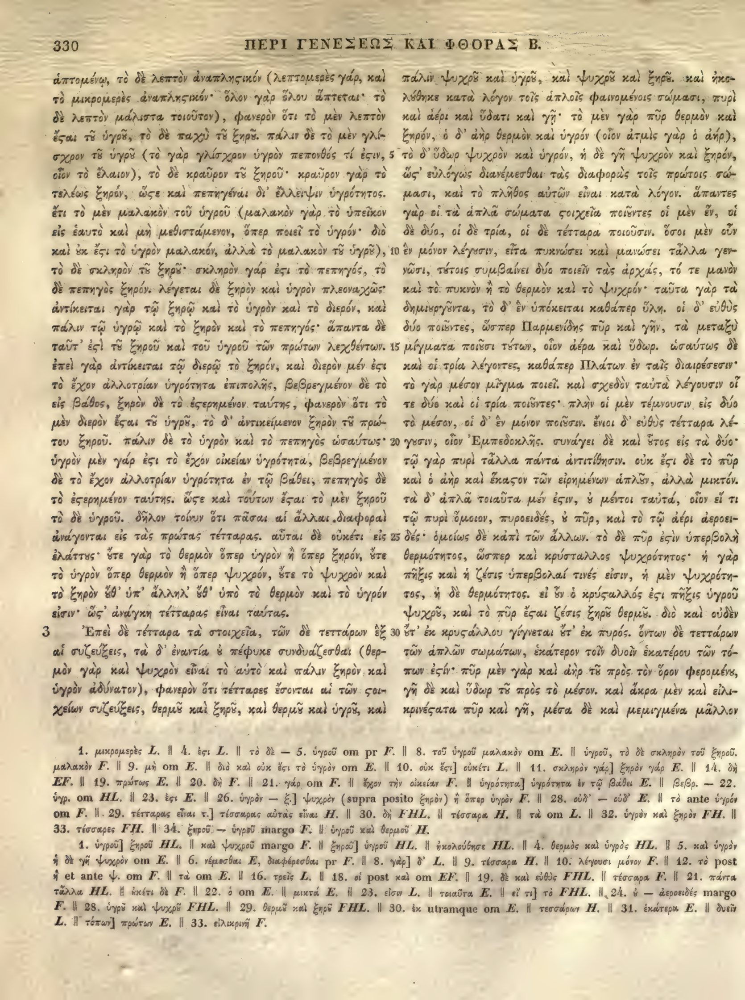

330a
| 1 | ἁπτομένῳ, τὸ δὲ λεπτὸν <choice resp="#hathiTrustOCR"><sic>ἀναπλησικόν</sic><corr>ἀναπληστικόν</corr></choice> (λεπτομερὲς γάρ, καὶ | 0.90 |
|---|---|---|
| 2 | τὸ μικρομερὲς <choice resp="#hathiTrustOCR"><sic>ἀναπλησικόν</sic><corr>ἀναπληστικόν</corr></choice>· ὅλον γὰρ ὅλου ἅπτεται· τὸ | 0.90 |
| 3 | δὲ λεπτὸν μάλιστα τοιοῦτον), φανερὸν ὅτι τὸ μὲν λεπτόν | 0.90 |
| 4 | ἐστι <choice resp="#Mugler1966"><sic>τῷ</sic><corr>τοῦ</corr></choice> <choice resp="#Mugler1966"><sic>ὑγρῷ</sic><corr>ὑγροῦ</corr></choice>, τὸ δὲ παχὺ <choice resp="#Mugler1966"><sic>τῷ</sic><corr>τοῦ</corr></choice> <choice resp="#Mugler1966"><sic>ξηρῷ</sic><corr>ξηροῦ</corr></choice>. πάλιν δὲ τὸ μὲν γλί- | 0.90 |
| 5 | σχρον <choice resp="#Mugler1966"><sic>τῷ</sic><corr>τοῦ</corr></choice> <choice resp="#Mugler1966"><sic>ὑγρῷ</sic><corr>ὑγροῦ</corr></choice> (τὸ γὰρ γλίσχρον ὑγρὸν πεπονθός τί ἐστιν, | 0.90 |
| 6 | οἷον τὸ ἔλαιον), τὸ δὲ κραῦρον <choice resp="#Mugler1966"><sic>τῷ</sic><corr>τοῦ</corr></choice> <choice resp="#Mugler1966"><sic>ξηρῷ</sic><corr>ξηροῦ</corr></choice>· κραῦρον γάρ <choice resp="#Mugler1966"><sic>τι</sic><corr>τὸ</corr></choice> | 0.90 |
| 7 | τελέως ξηρόν, ὥστε καὶ <choice resp="#Mugler1966"><sic>πηγῆναι</sic><corr>πεπηγέναι</corr></choice> δι' ἔλλειψιν ὑγρότητος. | 0.90 |
| 8 | ἔτι τὸ μὲν μαλακὸν τοῦ ὑγροῦ (μαλακὸν γὰρ τὸ ὑπεῖκον | 0.90 |
| 9 | εἰς ἑαυτὸ καὶ μὴ μεθιστάμενον, ὅπερ ποιεῖ τὸ ὑγρόν· διὸ | 0.90 |
| 10 | καὶ οὐκ ἔστι τὸ ὑγρὸν μαλακόν, ἀλλὰ τὸ μαλακὸν <choice resp="#Mugler1966"><sic>τὸ</sic><corr>τοῦ</corr></choice> ὑγρόν), | 0.90 |
| 11 | τὸ δὲ σκληρὸν <choice resp="#Mugler1966"><sic>τῷ</sic><corr>τοῦ</corr></choice> <choice resp="#Mugler1966"><sic>ξηρῷ</sic><corr>ξηροῦ</corr></choice>· σκληρὸν γάρ ἐστι τὸ πεπηγός, τὸ | 0.90 |
| 12 | δὲ πεπηγὸς ξηρόν. λέγεται δὲ ξηρὸν καὶ ὑγρὸν πλεοναχῶς· | 0.90 |
| 13 | ἀντίκειται γὰρ τῷ ξηρῷ καὶ τὸ ὑγρὸν καὶ τὸ διερόν, καὶ | 0.90 |
| 14 | πάλιν τῷ ὑγρῷ καὶ τὸ ξηρὸν καὶ τὸ πεπηγός· ἅπαντα δὲ | 0.90 |
| 15 | ταῦτ' ἐστὶ <choice resp="#Mugler1966"><sic>τῷ</sic><corr>τοῦ</corr></choice> ξηροῦ καὶ τοῦ ὑγροῦ τῶν <choice resp="#Mugler1966"><sic>πρώτων</sic><corr>πρώτως</corr></choice> λεχθέντων. | 0.90 |
| 16 | ἐπεὶ γὰρ ἀντίκειται τῷ διερῷ τὸ ξηρόν, καὶ διερὸν μέν ἐστι | 0.90 |
| 17 | τὸ ἔχον ἀλλοτρίαν ὑγρότητα ἐπιπολῆς, βεβρεγμένον δὲ τὸ | 0.90 |
| 18 | εἰς βάθος, ξηρὸν δὲ τὸ <choice resp="#Mugler1966"><sic>ἐξηρημένον</sic><corr>ἐστερημένον</corr></choice> ταύτης, φανερὸν ὅτι τὸ | 0.90 |
| 19 | μὲν διερὸν ἔσται <choice resp="#Mugler1966"><sic>τῷ</sic><corr>τοῦ</corr></choice> <choice resp="#Mugler1966"><sic>ὑγρῷ</sic><corr>ὑγροῦ</corr></choice>, τὸ δ' ἀντικείμενον ξηρῷ <choice resp="#Mugler1966"><sic>τῷ</sic><corr>τοῦ</corr></choice> πρώ- | 0.90 |
| 20 | του ξηροῦ. πάλιν δὲ τὸ ὑγρὸν καὶ τὸ πεπηγὸς ὡσαύτως· | 0.90 |
| 21 | ὑγρὸν μέν γάρ ἐστι τὸ ἔχον οἰκείαν ὑγρότητα, βεβρεγμένον | 0.90 |
| 22 | δὲ τὸ ἔχον ἀλλοτρίαν ὑγρότητα ἐν τῷ βάθει, πεπηγὸς δὲ | 0.90 |
| 23 | τὸ <choice resp="#Mugler1966"><sic>ἐξηρημένον</sic><corr>ἐστερημένον</corr></choice> ταύτης. ὥστε καὶ τούτων ἔσται τὸ μὲν ξηροῦ | 0.90 |
| 24 | τὸ δὲ ὑγροῦ. δῆλον τοίνυν ὅτι πᾶσαι αἱ ἄλλαι διαφοραὶ | 0.90 |
| 25 | ἀνάγονται εἰς τὰς πρώτας τέτταρας. αὗται δὲ οὐκέτι <choice resp="#Mugler1966"><sic>εἰσὶν</sic><corr>εἰς</corr></choice> | 0.90 |
| 26 | ἐλάττους· <choice resp="#Mugler1966"><sic>ὅτε</sic><corr>οὔτε</corr></choice> γὰρ τὸ θερμὸν ὑπὲρ ὑγρὸν ἢ ὑπὲρ ξηρόν, <choice resp="#Mugler1966"><sic>ὅτε</sic><corr>οὔτε</corr></choice> | 0.90 |
| 27 | τὸ ὑγρὸν ὑπὲρ θερμὸν ἢ ὑπὲρ ψυχρόν, <choice resp="#Mugler1966"><sic>ὅτε</sic><corr>οὔτε</corr></choice> τὸ ψυχρὸν καὶ | 0.90 |
| 28 | τὸ ξηρὸν <choice resp="#Mugler1966"><sic>θ</sic><corr>οὔθ</corr></choice>' ὑπ' ἄλληλ' <choice resp="#Mugler1966"><sic>θ</sic><corr>οὔθ</corr></choice>' ὑπὸ τὸ θερμὸν καὶ τὸ ὑγρόν | 0.90 |
| 29 | εἰσιν· <choice resp="#hathiTrustOCR"><sic>ὥς'</sic><corr>ὥστ'</corr></choice> ἀνάγκη τέτταρας εἶναι ταύτας. | 0.90 |
| Book 2, chapter 3 | ||
| 30 | Ἐπεὶ δὲ τέτταρα τὰ στοιχεῖα, τῶν δὲ τεττάρων ἐξ | 0.90 |
| 31 | αἱ συζεύξεις, τὰ δ' ἐναντία <choice resp="#Mugler1966"><sic>ὡς</sic><corr>οὐ</corr></choice> πέφυκε συνδυάζεσθαι (θερ- | 0.90 |
| 32 | μὸν γὰρ καὶ ψυχρὸν εἶναι τὸ αὐτὸ καὶ πάλιν ξηρὸν καὶ | 0.90 |
| 33 | ὑγρὸν ἀδύνατον), φανερὸν ὅτι τέτταρες ἔσονται αἱ τῶν σω- | 0.90 |
| 34 | χείων συζεύξεις, <choice resp="#Mugler1966"><sic>θερμῷ</sic><corr>θερμοῦ</corr></choice> καὶ <choice resp="#Mugler1966"><sic>ξηρῷ</sic><corr>ξηροῦ</corr></choice>, καὶ <choice resp="#Mugler1966"><sic>θερμῷ</sic><corr>θερμοῦ</corr></choice> καὶ ὑγρῷ, καὶ | 0.90 |
330b
| 1 | καὶ πάλιν <choice resp="#Mugler1966"><sic>ψυχρῷ</sic><corr>ψυχροῦ</corr></choice> καὶ <choice resp="#Mugler1966"><sic>ὑγρῷ</sic><corr>ὑγροῦ</corr></choice>, καὶ <choice resp="#Mugler1966"><sic>ψυχρῷ</sic><corr>ψυχροῦ</corr></choice> καὶ <choice resp="#Mugler1966"><sic>ξηρῷ</sic><corr>ξηροῦ</corr></choice>. καὶ ἴσα | 0.90 |
|---|---|---|
| 2 | τὸ λάβηκε κατὰ λόγον τοῖς ἁπλοῖς φαινομένοις σώμασι, πυρὶ | 0.85 |
| 3 | καὶ ἀέρι καὶ ὕδατι καὶ γῇ· τὸ μὲν γὰρ πῦρ θερμὸν καὶ | 0.90 |
| 4 | ξηρόν, ὁ δ’ ἀὴρ θερμὸν καὶ ὑγρόν (οἷον ἀτμὶς γάρ ὁ ἀήρ)· | 0.90 |
| 5 | τὸ δ’ ὕδωρ ψυχρὸν καὶ ὑγρόν, ἡ δὲ γῆ ψυχρὸν καὶ ξηρόν. | 0.90 |
| 6 | <choice resp="#hathiTrustOCR"><sic>ὡς εὐλόγως</sic><corr>ὥστ᾽ εὐλόγως</corr></choice> διανέμεσθαι τὰς διαφορὰς τοῖς πρώτοις σώ- | 0.90 |
| 7 | μασι, καὶ τὸ πλῆθος αὐτῶν εἶναι κατὰ λόγον. ἅπαντες | 0.90 |
| 8 | γὰρ οἱ τὰ ἁπλᾶ σώματα <choice resp="#hathiTrustOCR"><sic>ςοιχεῖα</sic><corr>στοιχεῖα</corr></choice> ποιοῦντες οἱ μὲν ἓν, οἱ | 0.90 |
| 9 | δὲ δύο, οἱ δὲ τρία, οἱ δὲ τέτταρα ποιοῦσιν. ὅσοι μὲν οὖν | 0.90 |
| 10 | ἓν μόνον λέγουσιν, εἶτα πυκνώσει καὶ μανώσει τἆλλα γεν- | 0.90 |
| 11 | νῶσι, τούτοις συμβαίνει δύο ποιεῖν τὰς ἀρχάς, τό τε μανὸν | 0.90 |
| 12 | καὶ τὸ πυκνὸν ἢ τὸ θερμὸν καὶ τὸ ψυχρόν· ταῦτα γὰρ τὰ | 0.90 |
| 13 | δημιουργοῦντα, τὸ δ’ ἐν ὑπόκειται καθάπερ ὕλη. οἱ δ’ <choice resp="#Mugler1966"><sic>εὐθὺ</sic><corr>εὐθὺς</corr></choice> | 0.90 |
| 14 | δύο ποιοῦντες, ὥσπερ Παρμενίδης πῦρ καὶ γῆν, τὰ μεταξὺ | 0.90 |
| 15 | μίγματα ποιοῦσι τούτων, οἷον ἀέρα καὶ ὕδωρ. ὡσαύτως <choice resp="#Mugler1966"><sic>δ</sic><corr>δὲ</corr></choice>’ | 0.90 |
| 16 | καὶ οἱ τρία λέγοντες, καθάπερ Πλάτων ἐν ταῖς διαιρέσεσιν· | 0.90 |
| 17 | τὸ γὰρ μέσον μίγμα ποιεῖ. καὶ σχεδὸν ταὐτὰ λέγουσιν οἱ | 0.90 |
| 18 | τε δύο καὶ οἱ τρία ποιοῦντες· πλὴν οἱ μὲν τέμνουσιν εἰς δύο | 0.90 |
| 19 | τὸ μέσον, οἱ δ’ ἐν μόνον ποιοῦσιν. ἔνιοι δ’ εὐθὺς τέτταρα λέ- | 0.90 |
| 20 | γουσιν, οἷον Ἐμπεδοκλῆς. συνάγει δὲ καὶ οὗτος εἰς τὰ δύο· | 0.90 |
| 21 | τῷ γὰρ πυρὶ τἆλλα πάντα ἀντιτίθησιν. οὐκ ἔστι δὲ τὸ πῦρ | 0.90 |
| 22 | καὶ ὁ ἀὴρ καὶ <choice resp="#hathiTrustOCR"><sic>ἕκαςον</sic><corr>ἕκαστον</corr></choice> τῶν εἰρημένων <choice resp="#Mugler1966"><sic>ἁπλᾶ</sic><corr>ἁπλοῦν</corr></choice>, ἀλλὰ <choice resp="#Mugler1966"><sic>μικτά</sic><corr>μικτόν</corr></choice>· | 0.90 |
| 23 | τὰ δ’ ἁπλᾶ τοιαῦτα μέν <choice resp="#hathiTrustOCR"><sic>ἐςιν</sic><corr>ἐστιν</corr></choice>, <choice resp="#Mugler1966"><sic>ἡ</sic><corr>οὐ</corr></choice> μέντοι ταὐτά, οἷον εἴ τι | 0.85 |
| 24 | τῷ πυρὶ ὅμοιον, πυροειδές, <choice resp="#Mugler1966"><sic>ἢ</sic><corr>οὐ</corr></choice> πῦρ, καὶ τὸ τῷ ἀέρι ἀεροει- | 0.90 |
| 25 | δές· ὁμοίως δὲ κἀπὶ τῶν ἄλλων. τὸ δὲ πῦρ <choice resp="#hathiTrustOCR"><sic>ἐςὶν</sic><corr>ἐστὶν</corr></choice> ὑπερβολὴ | 0.90 |
| 26 | θερμότητος, ὥσπερ καὶ κρύσταλλος ψυχρότητος· ἡ γὰρ | 0.90 |
| 27 | πῆξις καὶ ἡ ζέσις ὑπερβολαί τινές εἰσιν, ἡ μὲν ψυχρότη- | 0.90 |
| 28 | τος, ἡ δὲ θερμότητος. εἰ <choice resp="#Mugler1966"><sic>δὴ</sic><corr>οὖν</corr></choice> ὁ κρύσταλλος ἔστι πῆξις ὑγροῦ | 0.90 |
| 29 | ψυχροῦ, καὶ τὸ πῦρ <choice resp="#hathiTrustOCR"><sic>ἔςαι</sic><corr>ἔσται</corr></choice> ζέσις ξηροῦ θερμοῦ. διὸ καὶ οὐδὲ | 0.90 |
| 30 | ἐξ ὕδατος ἐκ <choice resp="#hathiTrustOCR"><sic>κρυςάλλου</sic><corr>κρυστάλλου</corr></choice> γίνεται οὐδ’ ἐκ πυρός. ὄντων δὲ τεττάρων | 0.85 |
| 31 | τῶν ἁπλῶν σωμάτων, <choice resp="#Mugler1966"><sic>ἑκάτερον</sic><corr>ἑκάτερα</corr></choice> τοῖν δυοῖν ἑκατέρου τῶν τό- | 0.90 |
| 32 | πων <choice resp="#hathiTrustOCR"><sic>ἐςίν</sic><corr>ἐστίν</corr></choice>· πῦρ μὲν γὰρ καὶ ἀὴρ <choice resp="#Mugler1966"><sic>τῷ</sic><corr>τοῦ</corr></choice> πρὸς τὸν ὅρον <choice resp="#Mugler1966"><sic>φερομένῳ</sic><corr>φερομένου</corr></choice> | 0.90 |
| 33 | γῇ δὲ καὶ ὕδωρ <choice resp="#Mugler1966"><sic>τῷ</sic><corr>τοῦ</corr></choice> πρὸς τὸ μέσον. καὶ ἄκρα μὲν καὶ <choice resp="#hathiTrustOCR"><sic>εἴλι-</sic><corr>εἰλι-</corr></choice> | 0.90 |
| 34 | <choice resp="#hathiTrustOCR"><sic>κρινέςατα</sic><corr>κρινέστατα</corr></choice> πῦρ καὶ γῆ, μέσα δὲ καὶ μεμιγμένα μᾶλλον | 0.90 |
Textual apparatus
- note-330-1 [both] 33. τέσσαρες FH. || 34. ξηροῦ — ὑγροῦ margo F. || ὑγροῦ καὶ θερμοῦ H.
- note-330-2 [both] 1. ὑγροῦ] ξηροῦ HL. || καὶ ψυχροῦ margo F. || ξηροῦ] ὑγροῦ HL. || ἠκολούθησε HL. || 4. θερμὸς καὶ ὑγρὸς HL. || 5. καὶ ὑγρὸ
- note-330-3 [both] ἡ δὲ γῇ ψυχρὸν om E. || 6. νέμεσθαι E, διαφέρεσθαι pr F. || 8. γὰρ] δ’ L. || 9. τέσσαρα H. || 10. λέγουσι μόνον F. || 12. τὸ pos
- note-330-4 [both] ἢ et ante ψ. om F. || τὰ om E. || 16. τρεῖς L. || 18. οἱ post καὶ om EF. || 19. δὲ καὶ εὐθὺς FHL. || τέσσαρα F. || 21. πάντο
- note-330-5 [both] τἆλλα HL. || ἐκέτι δὲ F. || 22. ὃ om E. || μικτὰ E. || 23. εἴσω L. || τοιαῦτα E. || εἴ τι] τὸ FHL. || 24. ὃ — ἀεροειδές margo
- note-330-6 [both] F. || 28. ὑγρῷ καὶ ψυχρῷ FHL. || 29. θερμῷ καὶ ξηρῷ FHL. || 30. ἐκ utramque om E. || τεσσάρων H. || 31. ἑκάτερα E. || δυεῖ
- note-330-7 [both] L. || τόπων] πρώτων E. || 33. εἰλικρινῆ F.
Verifier issues
- warning 330b1: possible gutter-copy artifact; column A ends and column B begins with
καὶ. - warning 330b2: possible gutter-copy artifact; column A ends and column B begins with
τὸ. - warning 330b17: possible gutter-copy artifact; column A ends and column B begins with
τὸ. - warning 330b30: possible gutter-copy artifact; column A ends and column B begins with
ἐξ.
All Greek-word differences from Mugler 1966 (91)
This inventory is exhaustive at the Greek-word level; it does not imply that either reading is an error.
- replace 330a1: ἀναπλησικόν ↔ ἀναπληστικόν (anchors: λεπτὸν … λεπτομερὲς)
- replace 330a2: ἀναπλησικόν ↔ ἀναπληστικόν (anchors: μικρομερὲς … ὅλον)
- orthographic_or_diacritic 330a3: λεπτόν ↔ λεπτὸν (anchors: μὲν … ἐστι)
- replace 330a4: ἐστι τῷ ὑγρῷ ↔ ἔσται τοῦ ὑγροῦ (anchors: λεπτόν … τὸ)
- replace 330a4: τῷ ξηρῷ ↔ τοῦ ξηροῦ (anchors: παχὺ … πάλιν)
- orthographic_or_diacritic 330a4: πάλιν ↔ Πάλιν (anchors: ξηρῷ … δὲ)
- replace 330a5: τῷ ὑγρῷ ↔ τοῦ ὑγροῦ (anchors: γλίσχρον … τὸ)
- replace 330a6: τῷ ξηρῷ ↔ τοῦ ξηροῦ (anchors: κραῦρον … κραῦρον)
- orthographic_or_diacritic 330a6: γάρ ↔ γὰρ (anchors: κραῦρον … τι)
- replace 330a6: τι ↔ τὸ (anchors: γάρ … τελέως)
- replace 330a7: πηγῆναι ↔ πεπηγέναι (anchors: καὶ … δι)
- orthographic_or_diacritic 330a7: δι ↔ δῑ (anchors: πηγῆναι … ἔλλειψιν)
- orthographic_or_diacritic 330a8: ἔτι ↔ Ἔτι (anchors: ὑγρότητος … τὸ)
- replace 330a10: τὸ ὑγρόν ↔ τοῦ ὑγροὖ (anchors: μαλακὸν … τὸ)
- replace 330a11: τῷ ξηρῷ ↔ τοῦ ξηροῦ (anchors: σκληρὸν … σκληρὸν)
- orthographic_or_diacritic 330a12: λέγεται ↔ Λέγεται (anchors: ξηρόν … δὲ)
- replace 330a15: τῷ ↔ τοῦ (anchors: ἐστὶ … ξηροῦ)
- replace 330a15: πρώτων ↔ πρώτως (anchors: τῶν … λεχθέντων)
- orthographic_or_diacritic 330a16: ἐπεὶ ↔ Ἐπεὶ (anchors: λεχθέντων … γὰρ)
- replace 330a18: ἐξηρημένον ↔ ἐστερημένον (anchors: τὸ … ταύτης)
- replace 330a19: τῷ ὑγρῷ ↔ τοῦ ὑγροῦ (anchors: ἔσται … τὸ)
- replace 330a19: ξηρῷ τῷ πρώτου ↔ ξηρὸν τοῦ πρώτως (anchors: ἀντικείμενον … ξηροῦ)
- orthographic_or_diacritic 330a20: πάλιν ↔ Πάλιν (anchors: ξηροῦ … δὲ)
- orthographic_or_diacritic 330a21: μέν ↔ μὲν (anchors: ὑγρὸν … γάρ)
- replace 330a23: ἐξηρημένον ↔ ἐστερημένον (anchors: τὸ … ταύτης)
- orthographic_or_diacritic 330a23: ὥστε ↔ Ὥστε (anchors: ταύτης … καὶ)
- orthographic_or_diacritic 330a24: δῆλον ↔ Δῆλον (anchors: ὑγροῦ … τοίνυν)
- orthographic_or_diacritic 330a25: αὗται ↔ Αὗται (anchors: τέτταρας … δὲ)
- replace 330a25: εἰσὶν ↔ εἰς (anchors: οὐκέτι … ἐλάττους)
- replace 330a26: ὅτε ↔ οὔτε (anchors: ἐλάττους … γὰρ)
- replace 330a26: ὑπὲρ ↔ ὅπερ (anchors: θερμὸν … ὑγρὸν)
- replace 330a26: ὑπὲρ ↔ ὅπερ (anchors: ἢ … ξηρόν)
- replace 330a26: ὅτε ↔ οὔτε (anchors: ξηρόν … τὸ)
- replace 330a27: ὑπὲρ ↔ ὅπερ (anchors: ὑγρὸν … θερμὸν)
- replace 330a27: ὑπὲρ ↔ ὅπερ (anchors: ἢ … ψυχρόν)
- replace 330a27: ὅτε ↔ οὔτε (anchors: ψυχρόν … τὸ)
- replace 330a28: θ ↔ οὔθ (anchors: ξηρὸν … ὑπ)
- replace 330a28: θ ↔ οὔθ (anchors: ἄλληλ … ὑπὸ)
- replace 330a29: ὥς ↔ ὥστ (anchors: εἰσιν … ἀνάγκη)
- orthographic_or_diacritic 330a30: ἐξ ↔ ἓξ (anchors: τεττάρων … αἱ)
- replace 330a31: ὡς ↔ οὐ (anchors: ἐναντία … πέφυκε)
- replace 330a33: σωχείων ↔ στοιχείων (anchors: τῶν … συζεύξεις)
- replace 330a34: θερμῷ ↔ θερμοῦ (anchors: συζεύξεις … καὶ)
- replace 330a34: ξηρῷ ↔ ξηροῦ (anchors: καὶ … καὶ)
- replace 330a34: θερμῷ ↔ θερμοῦ (anchors: καὶ … καὶ)
- replace 330a34: ὑγρῷ καὶ ↔ ὑγροῦ (anchors: καὶ … καὶ)
- replace 330b1: ψυχρῷ ↔ ψυχροῦ (anchors: πάλιν … καὶ)
- replace 330b1: ὑγρῷ ↔ ὑγροῦ (anchors: καὶ … καὶ)
- replace 330b1: ψυχρῷ ↔ ψυχροῦ (anchors: καὶ … καὶ)
- replace 330b1: ξηρῷ ↔ ξηροῦ (anchors: καὶ … καὶ)
- orthographic_or_diacritic 330b1: καὶ ↔ Καὶ (anchors: ξηρῷ … ἴσα)
- replace 330b1: ἴσα τὸ λάβηκε ↔ ἠκολούθηκε (anchors: καὶ … κατὰ)
- orthographic_or_diacritic 330b4: γάρ ↔ γὰρ (anchors: ἀτμὶς … ὁ)
- orthographic_or_diacritic 330b4: ἀήρ ↔ ἀήῤ (anchors: ὁ … τὸ)
- replace 330b6: ὡς ↔ ὥστ (anchors: ξηρόν … εὐλόγως)
- orthographic_or_diacritic 330b7: ἅπαντες ↔ Ἅπαντες (anchors: λόγον … γὰρ)
- orthographic_or_diacritic 330b8: ἓν ↔ ἕν (anchors: μὲν … οἱ)
- orthographic_or_diacritic 330b9: ὅσοι ↔ Ὅσοι (anchors: ποιοῦσιν … μὲν)
- orthographic_or_diacritic 330b13: ἐν ↔ ἓν (anchors: δ … ὑπόκειται)
- orthographic_or_diacritic 330b13: οἱ ↔ Οἱ (anchors: ὕλη … δ)
- replace 330b13: εὐθὺ ↔ εὐθὺς (anchors: δ … δύο)
- orthographic_or_diacritic 330b15: ὡσαύτως ↔ Ὡσαύτως (anchors: ὕδωρ … δ)
- replace 330b15: δ ↔ δὲ (anchors: ὡσαύτως … καὶ)
- orthographic_or_diacritic 330b17: καὶ ↔ Καὶ (anchors: ποιεῖ … σχεδὸν)
- orthographic_or_diacritic 330b17: οἱ ↔ οἵ (anchors: λέγουσιν … τε)
- orthographic_or_diacritic 330b19: ἐν ↔ ἓν (anchors: δ … μόνον)
- orthographic_or_diacritic 330b19: ἔνιοι ↔ Ἔνιοι (anchors: ποιοῦσιν … δ)
- orthographic_or_diacritic 330b20: συνάγει ↔ Συνάγει (anchors: Ἐμπεδοκλῆς … δὲ)
- orthographic_or_diacritic 330b21: οὐκ ↔ Οὐκ (anchors: ἀντιτίθησιν … ἔστι)
- replace 330b22: ἁπλᾶ ↔ ἁπλοῦν (anchors: εἰρημένων … ἀλλὰ)
- replace 330b22: μικτά ↔ μικτόν (anchors: ἀλλὰ … τὰ)
- orthographic_or_diacritic 330b23: τὰ ↔ Τὰ (anchors: μικτά … δ)
- replace 330b23: ἡ ↔ οὐ (anchors: ἐστιν … μέντοι)
- replace 330b24: ἢ ↔ οὐ (anchors: πυροειδές … πῦρ)
- orthographic_or_diacritic 330b25: τὸ ↔ Τὸ (anchors: ἄλλων … δὲ)
- orthographic_or_diacritic 330b25: ἐστὶν ↔ ἐστιν (anchors: πῦρ … ὑπερβολὴ)
- orthographic_or_diacritic 330b28: εἰ ↔ Εἰ (anchors: θερμότητος … δὴ)
- replace 330b28: δὴ ↔ οὖν (anchors: εἰ … ὁ)
- orthographic_or_diacritic 330b28: κρύσταλλος ↔ κρύσταλλός (anchors: ὁ … ἔστι)
- orthographic_or_diacritic 330b28: ἔστι ↔ ἐστι (anchors: κρύσταλλος … πῆξις)
- orthographic_or_diacritic 330b29: διὸ ↔ Διὸ (anchors: θερμοῦ … καὶ)
- replace 330b29: οὐδὲ ἐξ ὕδατος ↔ οὐδὲν οὔτ (anchors: καὶ … ἐκ)
- replace 330b30: οὐδ ↔ οὔτ (anchors: γίνεται … ἐκ)
- orthographic_or_diacritic 330b30: ὄντων ↔ Ὄντων (anchors: πυρός … δὲ)
- replace 330b31: ἑκάτερον ↔ ἑκάτερα (anchors: σωμάτων … τοῖν)
- replace 330b32: τῷ ↔ τοῦ (anchors: ἀὴρ … πρὸς)
- replace 330b32: φερομένῳ ↔ φερομένου (anchors: ὅρον … γῇ)
- orthographic_or_diacritic 330b33: γῇ ↔ γῆ (anchors: φερομένῳ … δὲ)
- replace 330b33: τῷ ↔ τοῦ (anchors: ὕδωρ … πρὸς)
- orthographic_or_diacritic 330b33: καὶ ↔ Καὶ (anchors: μέσον … ἄκρα)
- orthographic_or_diacritic 330b33: εἴλικρινέστατα ↔ εἰλικρινέστατα (anchors: καὶ … πῦρ)
Encoded TEI choices (58)
- a29
#hathiTrustOCR: <choice resp="#hathiTrustOCR"><sic>ὥς'</sic><corr>ὥστ'</corr></choice> (0.90) — The scan shows the στ ligature in ὥστ'. - b6
#hathiTrustOCR: <choice resp="#hathiTrustOCR"><sic>ὡς εὐλόγως</sic><corr>ὥστ᾽ εὐλόγως</corr></choice> (0.90) — The scan shows the στ ligature in ὥστ᾽. - b33
#hathiTrustOCR: <choice resp="#hathiTrustOCR"><sic>εἴλι-</sic><corr>εἰλι-</corr></choice> (0.90) — The scan shows εἰλι-; the Hathi OCR has εἰλι, but the scan confirms the standard reading. - a1
#hathiTrustOCR: <choice resp="#hathiTrustOCR"><sic>ἀναπλησικόν</sic><corr>ἀναπληστικόν</corr></choice> (1.00) — Aligned Hathi στ-ligature OCR correction: deterministic repair of the Hathi internal final sigma agrees with the scan and reference crop. - a2
#hathiTrustOCR: <choice resp="#hathiTrustOCR"><sic>ἀναπλησικόν</sic><corr>ἀναπληστικόν</corr></choice> (1.00) — Aligned Hathi στ-ligature OCR correction: deterministic repair of the Hathi internal final sigma agrees with the scan and reference crop. - b8
#hathiTrustOCR: <choice resp="#hathiTrustOCR"><sic>ςοιχεῖα</sic><corr>στοιχεῖα</corr></choice> (1.00) — Aligned Hathi στ-ligature OCR correction: deterministic repair of the Hathi internal final sigma agrees with the scan and reference crop. - b22
#hathiTrustOCR: <choice resp="#hathiTrustOCR"><sic>ἕκαςον</sic><corr>ἕκαστον</corr></choice> (1.00) — Aligned Hathi στ-ligature OCR correction: deterministic repair of the Hathi internal final sigma agrees with the scan and reference crop. - b23
#hathiTrustOCR: <choice resp="#hathiTrustOCR"><sic>ἐςιν</sic><corr>ἐστιν</corr></choice> (1.00) — Aligned Hathi στ-ligature OCR correction: deterministic repair of the Hathi internal final sigma agrees with the scan and reference crop. - b25
#hathiTrustOCR: <choice resp="#hathiTrustOCR"><sic>ἐςὶν</sic><corr>ἐστὶν</corr></choice> (1.00) — Aligned Hathi στ-ligature OCR correction: deterministic repair of the Hathi internal final sigma agrees with the scan and reference crop. - b29
#hathiTrustOCR: <choice resp="#hathiTrustOCR"><sic>ἔςαι</sic><corr>ἔσται</corr></choice> (1.00) — Aligned Hathi στ-ligature OCR correction: deterministic repair of the Hathi internal final sigma agrees with the scan and reference crop. - b30
#hathiTrustOCR: <choice resp="#hathiTrustOCR"><sic>κρυςάλλου</sic><corr>κρυστάλλου</corr></choice> (1.00) — Aligned Hathi στ-ligature OCR correction: deterministic repair of the Hathi internal final sigma agrees with the scan and reference crop. - b32
#hathiTrustOCR: <choice resp="#hathiTrustOCR"><sic>ἐςίν</sic><corr>ἐστίν</corr></choice> (1.00) — Aligned Hathi στ-ligature OCR correction: deterministic repair of the Hathi internal final sigma agrees with the scan and reference crop. - b34
#hathiTrustOCR: <choice resp="#hathiTrustOCR"><sic>κρινέςατα</sic><corr>κρινέστατα</corr></choice> (1.00) — Aligned Hathi στ-ligature OCR correction: deterministic repair of the Hathi internal final sigma agrees with the scan and reference crop. - a4
#Mugler1966: <choice resp="#Mugler1966"><sic>τῷ</sic><corr>τοῦ</corr></choice> (1.00) — Control-edition confirmation of the compact Berlin Bekker ου ligature; the OCR omitted upsilon and produced an impossible or contextually invalid Greek form. - a4
#Mugler1966: <choice resp="#Mugler1966"><sic>ὑγρῷ</sic><corr>ὑγροῦ</corr></choice> (1.00) — Control-edition confirmation of the compact Berlin Bekker ου ligature; the OCR omitted upsilon and produced an impossible or contextually invalid Greek form. - a4
#Mugler1966: <choice resp="#Mugler1966"><sic>τῷ</sic><corr>τοῦ</corr></choice> (1.00) — Control-edition confirmation of the compact Berlin Bekker ου ligature; the OCR omitted upsilon and produced an impossible or contextually invalid Greek form. - a4
#Mugler1966: <choice resp="#Mugler1966"><sic>ξηρῷ</sic><corr>ξηροῦ</corr></choice> (1.00) — Control-edition confirmation of the compact Berlin Bekker ου ligature; the OCR omitted upsilon and produced an impossible or contextually invalid Greek form. - a5
#Mugler1966: <choice resp="#Mugler1966"><sic>τῷ</sic><corr>τοῦ</corr></choice> (1.00) — Control-edition confirmation of the compact Berlin Bekker ου ligature; the OCR omitted upsilon and produced an impossible or contextually invalid Greek form. - a5
#Mugler1966: <choice resp="#Mugler1966"><sic>ὑγρῷ</sic><corr>ὑγροῦ</corr></choice> (1.00) — Control-edition confirmation of the compact Berlin Bekker ου ligature; the OCR omitted upsilon and produced an impossible or contextually invalid Greek form. - a6
#Mugler1966: <choice resp="#Mugler1966"><sic>τῷ</sic><corr>τοῦ</corr></choice> (1.00) — Control-edition confirmation of the compact Berlin Bekker ου ligature; the OCR omitted upsilon and produced an impossible or contextually invalid Greek form. - a6
#Mugler1966: <choice resp="#Mugler1966"><sic>ξηρῷ</sic><corr>ξηροῦ</corr></choice> (1.00) — Control-edition confirmation of the compact Berlin Bekker ου ligature; the OCR omitted upsilon and produced an impossible or contextually invalid Greek form. - a10
#Mugler1966: <choice resp="#Mugler1966"><sic>τὸ</sic><corr>τοῦ</corr></choice> (1.00) — Control-edition confirmation of the compact Berlin Bekker ου ligature; the OCR omitted upsilon and produced an impossible or contextually invalid Greek form. - a11
#Mugler1966: <choice resp="#Mugler1966"><sic>τῷ</sic><corr>τοῦ</corr></choice> (1.00) — Control-edition confirmation of the compact Berlin Bekker ου ligature; the OCR omitted upsilon and produced an impossible or contextually invalid Greek form. - a11
#Mugler1966: <choice resp="#Mugler1966"><sic>ξηρῷ</sic><corr>ξηροῦ</corr></choice> (1.00) — Control-edition confirmation of the compact Berlin Bekker ου ligature; the OCR omitted upsilon and produced an impossible or contextually invalid Greek form. - a15
#Mugler1966: <choice resp="#Mugler1966"><sic>τῷ</sic><corr>τοῦ</corr></choice> (1.00) — Control-edition confirmation of the compact Berlin Bekker ου ligature; the OCR omitted upsilon and produced an impossible or contextually invalid Greek form. - a19
#Mugler1966: <choice resp="#Mugler1966"><sic>τῷ</sic><corr>τοῦ</corr></choice> (1.00) — Control-edition confirmation of the compact Berlin Bekker ου ligature; the OCR omitted upsilon and produced an impossible or contextually invalid Greek form. - a19
#Mugler1966: <choice resp="#Mugler1966"><sic>ὑγρῷ</sic><corr>ὑγροῦ</corr></choice> (1.00) — Control-edition confirmation of the compact Berlin Bekker ου ligature; the OCR omitted upsilon and produced an impossible or contextually invalid Greek form. - a19
#Mugler1966: <choice resp="#Mugler1966"><sic>τῷ</sic><corr>τοῦ</corr></choice> (1.00) — Control-edition confirmation of the compact Berlin Bekker ου ligature; the OCR omitted upsilon and produced an impossible or contextually invalid Greek form. - a26
#Mugler1966: <choice resp="#Mugler1966"><sic>ὅτε</sic><corr>οὔτε</corr></choice> (1.00) — Control-edition confirmation of the compact Berlin Bekker ου ligature; the OCR omitted upsilon and produced an impossible or contextually invalid Greek form. - a26
#Mugler1966: <choice resp="#Mugler1966"><sic>ὅτε</sic><corr>οὔτε</corr></choice> (1.00) — Control-edition confirmation of the compact Berlin Bekker ου ligature; the OCR omitted upsilon and produced an impossible or contextually invalid Greek form. - a27
#Mugler1966: <choice resp="#Mugler1966"><sic>ὅτε</sic><corr>οὔτε</corr></choice> (1.00) — Control-edition confirmation of the compact Berlin Bekker ου ligature; the OCR omitted upsilon and produced an impossible or contextually invalid Greek form. - a34
#Mugler1966: <choice resp="#Mugler1966"><sic>θερμῷ</sic><corr>θερμοῦ</corr></choice> (1.00) — Control-edition confirmation of the compact Berlin Bekker ου ligature; the OCR omitted upsilon and produced an impossible or contextually invalid Greek form. - a34
#Mugler1966: <choice resp="#Mugler1966"><sic>ξηρῷ</sic><corr>ξηροῦ</corr></choice> (1.00) — Control-edition confirmation of the compact Berlin Bekker ου ligature; the OCR omitted upsilon and produced an impossible or contextually invalid Greek form. - a34
#Mugler1966: <choice resp="#Mugler1966"><sic>θερμῷ</sic><corr>θερμοῦ</corr></choice> (1.00) — Control-edition confirmation of the compact Berlin Bekker ου ligature; the OCR omitted upsilon and produced an impossible or contextually invalid Greek form. - b1
#Mugler1966: <choice resp="#Mugler1966"><sic>ψυχρῷ</sic><corr>ψυχροῦ</corr></choice> (1.00) — Control-edition confirmation of the compact Berlin Bekker ου ligature; the OCR omitted upsilon and produced an impossible or contextually invalid Greek form. - b1
#Mugler1966: <choice resp="#Mugler1966"><sic>ὑγρῷ</sic><corr>ὑγροῦ</corr></choice> (1.00) — Control-edition confirmation of the compact Berlin Bekker ου ligature; the OCR omitted upsilon and produced an impossible or contextually invalid Greek form. - b1
#Mugler1966: <choice resp="#Mugler1966"><sic>ψυχρῷ</sic><corr>ψυχροῦ</corr></choice> (1.00) — Control-edition confirmation of the compact Berlin Bekker ου ligature; the OCR omitted upsilon and produced an impossible or contextually invalid Greek form. - b1
#Mugler1966: <choice resp="#Mugler1966"><sic>ξηρῷ</sic><corr>ξηροῦ</corr></choice> (1.00) — Control-edition confirmation of the compact Berlin Bekker ου ligature; the OCR omitted upsilon and produced an impossible or contextually invalid Greek form. - b32
#Mugler1966: <choice resp="#Mugler1966"><sic>τῷ</sic><corr>τοῦ</corr></choice> (1.00) — Control-edition confirmation of the compact Berlin Bekker ου ligature; the OCR omitted upsilon and produced an impossible or contextually invalid Greek form. - b32
#Mugler1966: <choice resp="#Mugler1966"><sic>φερομένῳ</sic><corr>φερομένου</corr></choice> (1.00) — Control-edition confirmation of the compact Berlin Bekker ου ligature; the OCR omitted upsilon and produced an impossible or contextually invalid Greek form. - b33
#Mugler1966: <choice resp="#Mugler1966"><sic>τῷ</sic><corr>τοῦ</corr></choice> (1.00) — Control-edition confirmation of the compact Berlin Bekker ου ligature; the OCR omitted upsilon and produced an impossible or contextually invalid Greek form. - a6
#Mugler1966: <choice resp="#Mugler1966"><sic>τι</sic><corr>τὸ</corr></choice> (0.90) — Plausible one-token difference in the globally aligned Mugler 1966; surrounding token sequence is stable. - a7
#Mugler1966: <choice resp="#Mugler1966"><sic>πηγῆναι</sic><corr>πεπηγέναι</corr></choice> (0.90) — Plausible one-token difference in the globally aligned Mugler 1966; surrounding token sequence is stable. - a15
#Mugler1966: <choice resp="#Mugler1966"><sic>πρώτων</sic><corr>πρώτως</corr></choice> (0.90) — Plausible one-token difference in the globally aligned Mugler 1966; surrounding token sequence is stable. - a18
#Mugler1966: <choice resp="#Mugler1966"><sic>ἐξηρημένον</sic><corr>ἐστερημένον</corr></choice> (0.90) — Plausible one-token difference in the globally aligned Mugler 1966; surrounding token sequence is stable. - a23
#Mugler1966: <choice resp="#Mugler1966"><sic>ἐξηρημένον</sic><corr>ἐστερημένον</corr></choice> (0.90) — Plausible one-token difference in the globally aligned Mugler 1966; surrounding token sequence is stable. - a25
#Mugler1966: <choice resp="#Mugler1966"><sic>εἰσὶν</sic><corr>εἰς</corr></choice> (0.90) — Plausible one-token difference in the globally aligned Mugler 1966; surrounding token sequence is stable. - a28
#Mugler1966: <choice resp="#Mugler1966"><sic>θ</sic><corr>οὔθ</corr></choice> (0.90) — Plausible one-token difference in the globally aligned Mugler 1966; surrounding token sequence is stable. - a28
#Mugler1966: <choice resp="#Mugler1966"><sic>θ</sic><corr>οὔθ</corr></choice> (0.90) — Plausible one-token difference in the globally aligned Mugler 1966; surrounding token sequence is stable. - a31
#Mugler1966: <choice resp="#Mugler1966"><sic>ὡς</sic><corr>οὐ</corr></choice> (0.90) — Plausible one-token difference in the globally aligned Mugler 1966; surrounding token sequence is stable. - b13
#Mugler1966: <choice resp="#Mugler1966"><sic>εὐθὺ</sic><corr>εὐθὺς</corr></choice> (0.90) — Plausible one-token difference in the globally aligned Mugler 1966; surrounding token sequence is stable. - b15
#Mugler1966: <choice resp="#Mugler1966"><sic>δ</sic><corr>δὲ</corr></choice> (0.90) — Plausible one-token difference in the globally aligned Mugler 1966; surrounding token sequence is stable. - b22
#Mugler1966: <choice resp="#Mugler1966"><sic>ἁπλᾶ</sic><corr>ἁπλοῦν</corr></choice> (0.90) — Plausible one-token difference in the globally aligned Mugler 1966; surrounding token sequence is stable. - b22
#Mugler1966: <choice resp="#Mugler1966"><sic>μικτά</sic><corr>μικτόν</corr></choice> (0.90) — Plausible one-token difference in the globally aligned Mugler 1966; surrounding token sequence is stable. - b23
#Mugler1966: <choice resp="#Mugler1966"><sic>ἡ</sic><corr>οὐ</corr></choice> (0.90) — Plausible one-token difference in the globally aligned Mugler 1966; surrounding token sequence is stable. - b24
#Mugler1966: <choice resp="#Mugler1966"><sic>ἢ</sic><corr>οὐ</corr></choice> (0.90) — Plausible one-token difference in the globally aligned Mugler 1966; surrounding token sequence is stable. - b28
#Mugler1966: <choice resp="#Mugler1966"><sic>δὴ</sic><corr>οὖν</corr></choice> (0.90) — Plausible one-token difference in the globally aligned Mugler 1966; surrounding token sequence is stable. - b31
#Mugler1966: <choice resp="#Mugler1966"><sic>ἑκάτερον</sic><corr>ἑκάτερα</corr></choice> (0.90) — Plausible one-token difference in the globally aligned Mugler 1966; surrounding token sequence is stable.
Unmatched Hathi OCR words (167)
Compared after στ/ου normalization and scan-attested line-end dehyphenation. OCR line numbers refer to the Hathi text file.
| Normalized | Raw OCR | OCR line | Context |
|---|---|---|---|
| περι | περι | 3 | I ⏎ ΠΕΡΙ ΓΕΝΕΣΕΩΣ ΚΑΙ ΦΘΟΡΑΣ Β. ⏎ Εν |
| γενεσεως | γενεσεως | 3 | I ⏎ ΠΕΡΙ ΓΕΝΕΣΕΩΣ ΚΑΙ ΦΘΟΡΑΣ Β. ⏎ Εν |
| και | και | 3 | I ⏎ ΠΕΡΙ ΓΕΝΕΣΕΩΣ ΚΑΙ ΦΘΟΡΑΣ Β. ⏎ Εν |
| φθορας | φθορας | 3 | I ⏎ ΠΕΡΙ ΓΕΝΕΣΕΩΣ ΚΑΙ ΦΘΟΡΑΣ Β. ⏎ Εν |
| β | β | 3 | I ⏎ ΠΕΡΙ ΓΕΝΕΣΕΩΣ ΚΑΙ ΦΘΟΡΑΣ Β. ⏎ Εν |
| εν | εν | 4 | ΠΕΡΙ ΓΕΝΕΣΕΩΣ ΚΑΙ ΦΘΟΡΑΣ Β. ⏎ Εν ⏎ – ἁπτομένῳ, τὸ δὲ λεπτὸν ἀναπληςικόν (λεπτομερές γάρ, καὶ πάλιν ψυχρᾶ καὶ ὑγρό, καὶ ψυχρᾶ καὶ ξηρᾶ. καὶ ἠκο |
| ἀναπληστικόν | ἀναπληςικόν | 5 | Εν ⏎ – ἁπτομένῳ, τὸ δὲ λεπτὸν ἀναπληςικόν (λεπτομερές γάρ, καὶ πάλιν ψυχρᾶ καὶ ὑγρό, καὶ ψυχρᾶ καὶ ξηρᾶ. καὶ ἠκο ⏎ τὸ μικρομερὲς ἀναπληςικόν· ὅλον γὰρ ὅλου ἅπτεται· τὸ λύθηκε κατὰ λόγον τοῖς ἁπλοῖς φαινομένοις σώμασι, πυρὶ |
| λεπτομερές | λεπτομερές | 5 | Εν ⏎ – ἁπτομένῳ, τὸ δὲ λεπτὸν ἀναπληςικόν (λεπτομερές γάρ, καὶ πάλιν ψυχρᾶ καὶ ὑγρό, καὶ ψυχρᾶ καὶ ξηρᾶ. καὶ ἠκο ⏎ τὸ μικρομερὲς ἀναπληςικόν· ὅλον γὰρ ὅλου ἅπτεται· τὸ λύθηκε κατὰ λόγον τοῖς ἁπλοῖς φαινομένοις σώμασι, πυρὶ |
| ψυχρᾶ | ψυχρᾶ | 5 | Εν ⏎ – ἁπτομένῳ, τὸ δὲ λεπτὸν ἀναπληςικόν (λεπτομερές γάρ, καὶ πάλιν ψυχρᾶ καὶ ὑγρό, καὶ ψυχρᾶ καὶ ξηρᾶ. καὶ ἠκο ⏎ τὸ μικρομερὲς ἀναπληςικόν· ὅλον γὰρ ὅλου ἅπτεται· τὸ λύθηκε κατὰ λόγον τοῖς ἁπλοῖς φαινομένοις σώμασι, πυρὶ |
| ὑγρό | ὑγρό | 5 | Εν ⏎ – ἁπτομένῳ, τὸ δὲ λεπτὸν ἀναπληςικόν (λεπτομερές γάρ, καὶ πάλιν ψυχρᾶ καὶ ὑγρό, καὶ ψυχρᾶ καὶ ξηρᾶ. καὶ ἠκο ⏎ τὸ μικρομερὲς ἀναπληςικόν· ὅλον γὰρ ὅλου ἅπτεται· τὸ λύθηκε κατὰ λόγον τοῖς ἁπλοῖς φαινομένοις σώμασι, πυρὶ |
| ψυχρᾶ | ψυχρᾶ | 5 | Εν ⏎ – ἁπτομένῳ, τὸ δὲ λεπτὸν ἀναπληςικόν (λεπτομερές γάρ, καὶ πάλιν ψυχρᾶ καὶ ὑγρό, καὶ ψυχρᾶ καὶ ξηρᾶ. καὶ ἠκο ⏎ τὸ μικρομερὲς ἀναπληςικόν· ὅλον γὰρ ὅλου ἅπτεται· τὸ λύθηκε κατὰ λόγον τοῖς ἁπλοῖς φαινομένοις σώμασι, πυρὶ |
| ξηρᾶ | ξηρᾶ | 5 | Εν ⏎ – ἁπτομένῳ, τὸ δὲ λεπτὸν ἀναπληςικόν (λεπτομερές γάρ, καὶ πάλιν ψυχρᾶ καὶ ὑγρό, καὶ ψυχρᾶ καὶ ξηρᾶ. καὶ ἠκο ⏎ τὸ μικρομερὲς ἀναπληςικόν· ὅλον γὰρ ὅλου ἅπτεται· τὸ λύθηκε κατὰ λόγον τοῖς ἁπλοῖς φαινομένοις σώμασι, πυρὶ |
| ἠκο | ἠκο | 5 | Εν ⏎ – ἁπτομένῳ, τὸ δὲ λεπτὸν ἀναπληςικόν (λεπτομερές γάρ, καὶ πάλιν ψυχρᾶ καὶ ὑγρό, καὶ ψυχρᾶ καὶ ξηρᾶ. καὶ ἠκο ⏎ τὸ μικρομερὲς ἀναπληςικόν· ὅλον γὰρ ὅλου ἅπτεται· τὸ λύθηκε κατὰ λόγον τοῖς ἁπλοῖς φαινομένοις σώμασι, πυρὶ |
| ἀναπληστικόν | ἀναπληςικόν | 6 | – ἁπτομένῳ, τὸ δὲ λεπτὸν ἀναπληςικόν (λεπτομερές γάρ, καὶ πάλιν ψυχρᾶ καὶ ὑγρό, καὶ ψυχρᾶ καὶ ξηρᾶ. καὶ ἠκο ⏎ τὸ μικρομερὲς ἀναπληςικόν· ὅλον γὰρ ὅλου ἅπτεται· τὸ λύθηκε κατὰ λόγον τοῖς ἁπλοῖς φαινομένοις σώμασι, πυρὶ ⏎ δὲ λεπτὸν μάλιστα τοιοῦτον), φανερὸν ὅτι τὸ μὲν λεπτὸν καὶ ἀέρι καὶ ὕδατι καὶ γῇ· τὸ μὲν γὰρ πῦρ θερμὸν καὶ |
| λύθηκε | λύθηκε | 6 | – ἁπτομένῳ, τὸ δὲ λεπτὸν ἀναπληςικόν (λεπτομερές γάρ, καὶ πάλιν ψυχρᾶ καὶ ὑγρό, καὶ ψυχρᾶ καὶ ξηρᾶ. καὶ ἠκο ⏎ τὸ μικρομερὲς ἀναπληςικόν· ὅλον γὰρ ὅλου ἅπτεται· τὸ λύθηκε κατὰ λόγον τοῖς ἁπλοῖς φαινομένοις σώμασι, πυρὶ ⏎ δὲ λεπτὸν μάλιστα τοιοῦτον), φανερὸν ὅτι τὸ μὲν λεπτὸν καὶ ἀέρι καὶ ὕδατι καὶ γῇ· τὸ μὲν γὰρ πῦρ θερμὸν καὶ |
| ἔσαι | ἔσαι | 8 | δὲ λεπτὸν μάλιστα τοιοῦτον), φανερὸν ὅτι τὸ μὲν λεπτὸν καὶ ἀέρι καὶ ὕδατι καὶ γῇ· τὸ μὲν γὰρ πῦρ θερμὸν καὶ ⏎ ἔσαι τὸ ὑγρό, τὸ δὲ παχὺ τὸ ξηρδ. πάλιν δὲ τὸ μὲν γλί- ξηρόν, ὁ δ᾽ ἀὴρ θερμὸν καὶ ὑγρόν (οἷον ἀτμὶς γὰρ ὁ ἀήρ), ⏎ σχρον τὸ ὑγρα (τὸ γὰρ γλίσχρον ὑγρὸν πεπονθός τί ἐςιν, 5 τὸ δ᾽ ὕδωρ ψυχρὸν καὶ ὑγρόν, ἡ δὲ γῆ ψυχρὸν καὶ ξηρόν, |
| ὑγρό | ὑγρό | 8 | δὲ λεπτὸν μάλιστα τοιοῦτον), φανερὸν ὅτι τὸ μὲν λεπτὸν καὶ ἀέρι καὶ ὕδατι καὶ γῇ· τὸ μὲν γὰρ πῦρ θερμὸν καὶ ⏎ ἔσαι τὸ ὑγρό, τὸ δὲ παχὺ τὸ ξηρδ. πάλιν δὲ τὸ μὲν γλί- ξηρόν, ὁ δ᾽ ἀὴρ θερμὸν καὶ ὑγρόν (οἷον ἀτμὶς γὰρ ὁ ἀήρ), ⏎ σχρον τὸ ὑγρα (τὸ γὰρ γλίσχρον ὑγρὸν πεπονθός τί ἐςιν, 5 τὸ δ᾽ ὕδωρ ψυχρὸν καὶ ὑγρόν, ἡ δὲ γῆ ψυχρὸν καὶ ξηρόν, |
| ξηρδ | ξηρδ | 8 | δὲ λεπτὸν μάλιστα τοιοῦτον), φανερὸν ὅτι τὸ μὲν λεπτὸν καὶ ἀέρι καὶ ὕδατι καὶ γῇ· τὸ μὲν γὰρ πῦρ θερμὸν καὶ ⏎ ἔσαι τὸ ὑγρό, τὸ δὲ παχὺ τὸ ξηρδ. πάλιν δὲ τὸ μὲν γλί- ξηρόν, ὁ δ᾽ ἀὴρ θερμὸν καὶ ὑγρόν (οἷον ἀτμὶς γὰρ ὁ ἀήρ), ⏎ σχρον τὸ ὑγρα (τὸ γὰρ γλίσχρον ὑγρὸν πεπονθός τί ἐςιν, 5 τὸ δ᾽ ὕδωρ ψυχρὸν καὶ ὑγρόν, ἡ δὲ γῆ ψυχρὸν καὶ ξηρόν, |
| δ᾽ | δ᾽ | 8 | δὲ λεπτὸν μάλιστα τοιοῦτον), φανερὸν ὅτι τὸ μὲν λεπτὸν καὶ ἀέρι καὶ ὕδατι καὶ γῇ· τὸ μὲν γὰρ πῦρ θερμὸν καὶ ⏎ ἔσαι τὸ ὑγρό, τὸ δὲ παχὺ τὸ ξηρδ. πάλιν δὲ τὸ μὲν γλί- ξηρόν, ὁ δ᾽ ἀὴρ θερμὸν καὶ ὑγρόν (οἷον ἀτμὶς γὰρ ὁ ἀήρ), ⏎ σχρον τὸ ὑγρα (τὸ γὰρ γλίσχρον ὑγρὸν πεπονθός τί ἐςιν, 5 τὸ δ᾽ ὕδωρ ψυχρὸν καὶ ὑγρόν, ἡ δὲ γῆ ψυχρὸν καὶ ξηρόν, |
| ὑγρα | ὑγρα | 9 | ἔσαι τὸ ὑγρό, τὸ δὲ παχὺ τὸ ξηρδ. πάλιν δὲ τὸ μὲν γλί- ξηρόν, ὁ δ᾽ ἀὴρ θερμὸν καὶ ὑγρόν (οἷον ἀτμὶς γὰρ ὁ ἀήρ), ⏎ σχρον τὸ ὑγρα (τὸ γὰρ γλίσχρον ὑγρὸν πεπονθός τί ἐςιν, 5 τὸ δ᾽ ὕδωρ ψυχρὸν καὶ ὑγρόν, ἡ δὲ γῆ ψυχρὸν καὶ ξηρόν, ⏎ οἷον τὸ ἔλαιον), τὸ δὲ κραῦρον τὸ ξηροῦ· κραῦρον γὰρ τὸ ὥς᾽ εὐλόγως διανέμεσθαι τὰς διαφορὼς τοῖς πρώτοις σφάζου |
| δ᾽ | δ᾽ | 9 | ἔσαι τὸ ὑγρό, τὸ δὲ παχὺ τὸ ξηρδ. πάλιν δὲ τὸ μὲν γλί- ξηρόν, ὁ δ᾽ ἀὴρ θερμὸν καὶ ὑγρόν (οἷον ἀτμὶς γὰρ ὁ ἀήρ), ⏎ σχρον τὸ ὑγρα (τὸ γὰρ γλίσχρον ὑγρὸν πεπονθός τί ἐςιν, 5 τὸ δ᾽ ὕδωρ ψυχρὸν καὶ ὑγρόν, ἡ δὲ γῆ ψυχρὸν καὶ ξηρόν, ⏎ οἷον τὸ ἔλαιον), τὸ δὲ κραῦρον τὸ ξηροῦ· κραῦρον γὰρ τὸ ὥς᾽ εὐλόγως διανέμεσθαι τὰς διαφορὼς τοῖς πρώτοις σφάζου |
| ὥστ᾽ | ὥς᾽ | 10 | σχρον τὸ ὑγρα (τὸ γὰρ γλίσχρον ὑγρὸν πεπονθός τί ἐςιν, 5 τὸ δ᾽ ὕδωρ ψυχρὸν καὶ ὑγρόν, ἡ δὲ γῆ ψυχρὸν καὶ ξηρόν, ⏎ οἷον τὸ ἔλαιον), τὸ δὲ κραῦρον τὸ ξηροῦ· κραῦρον γὰρ τὸ ὥς᾽ εὐλόγως διανέμεσθαι τὰς διαφορὼς τοῖς πρώτοις σφάζου ⏎ τελέως, ξηρόν, ὥςε καὶ πεπηγέναι δι᾽ ἔλλειψιν ὑγρότητος. μασι, καὶ τὸ πλῆθος αὐτῶν εἶναι κατὰ λόγον. ἅπαντες |
| διαφορὼς | διαφορὼς | 10 | σχρον τὸ ὑγρα (τὸ γὰρ γλίσχρον ὑγρὸν πεπονθός τί ἐςιν, 5 τὸ δ᾽ ὕδωρ ψυχρὸν καὶ ὑγρόν, ἡ δὲ γῆ ψυχρὸν καὶ ξηρόν, ⏎ οἷον τὸ ἔλαιον), τὸ δὲ κραῦρον τὸ ξηροῦ· κραῦρον γὰρ τὸ ὥς᾽ εὐλόγως διανέμεσθαι τὰς διαφορὼς τοῖς πρώτοις σφάζου ⏎ τελέως, ξηρόν, ὥςε καὶ πεπηγέναι δι᾽ ἔλλειψιν ὑγρότητος. μασι, καὶ τὸ πλῆθος αὐτῶν εἶναι κατὰ λόγον. ἅπαντες |
| σφάζου | σφάζου | 10 | σχρον τὸ ὑγρα (τὸ γὰρ γλίσχρον ὑγρὸν πεπονθός τί ἐςιν, 5 τὸ δ᾽ ὕδωρ ψυχρὸν καὶ ὑγρόν, ἡ δὲ γῆ ψυχρὸν καὶ ξηρόν, ⏎ οἷον τὸ ἔλαιον), τὸ δὲ κραῦρον τὸ ξηροῦ· κραῦρον γὰρ τὸ ὥς᾽ εὐλόγως διανέμεσθαι τὰς διαφορὼς τοῖς πρώτοις σφάζου ⏎ τελέως, ξηρόν, ὥςε καὶ πεπηγέναι δι᾽ ἔλλειψιν ὑγρότητος. μασι, καὶ τὸ πλῆθος αὐτῶν εἶναι κατὰ λόγον. ἅπαντες |
| πεπηγέναι | πεπηγέναι | 11 | οἷον τὸ ἔλαιον), τὸ δὲ κραῦρον τὸ ξηροῦ· κραῦρον γὰρ τὸ ὥς᾽ εὐλόγως διανέμεσθαι τὰς διαφορὼς τοῖς πρώτοις σφάζου ⏎ τελέως, ξηρόν, ὥςε καὶ πεπηγέναι δι᾽ ἔλλειψιν ὑγρότητος. μασι, καὶ τὸ πλῆθος αὐτῶν εἶναι κατὰ λόγον. ἅπαντες ⏎ ἔτι τὸ μὲν μαλακὸν τοῦ ὑγροῦ (μαλακὸν γὰρ τὸ ὑπεῖκον γὰρ οἱ τὰ ἁπλᾶ σώματα ςοιχεῖα ποιόντες οἱ μὲν ἕν, οἱ |
| δι᾽ | δι᾽ | 11 | οἷον τὸ ἔλαιον), τὸ δὲ κραῦρον τὸ ξηροῦ· κραῦρον γὰρ τὸ ὥς᾽ εὐλόγως διανέμεσθαι τὰς διαφορὼς τοῖς πρώτοις σφάζου ⏎ τελέως, ξηρόν, ὥςε καὶ πεπηγέναι δι᾽ ἔλλειψιν ὑγρότητος. μασι, καὶ τὸ πλῆθος αὐτῶν εἶναι κατὰ λόγον. ἅπαντες ⏎ ἔτι τὸ μὲν μαλακὸν τοῦ ὑγροῦ (μαλακὸν γὰρ τὸ ὑπεῖκον γὰρ οἱ τὰ ἁπλᾶ σώματα ςοιχεῖα ποιόντες οἱ μὲν ἕν, οἱ |
| μασι | μασι | 11 | οἷον τὸ ἔλαιον), τὸ δὲ κραῦρον τὸ ξηροῦ· κραῦρον γὰρ τὸ ὥς᾽ εὐλόγως διανέμεσθαι τὰς διαφορὼς τοῖς πρώτοις σφάζου ⏎ τελέως, ξηρόν, ὥςε καὶ πεπηγέναι δι᾽ ἔλλειψιν ὑγρότητος. μασι, καὶ τὸ πλῆθος αὐτῶν εἶναι κατὰ λόγον. ἅπαντες ⏎ ἔτι τὸ μὲν μαλακὸν τοῦ ὑγροῦ (μαλακὸν γὰρ τὸ ὑπεῖκον γὰρ οἱ τὰ ἁπλᾶ σώματα ςοιχεῖα ποιόντες οἱ μὲν ἕν, οἱ |
| ποιόντες | ποιόντες | 12 | τελέως, ξηρόν, ὥςε καὶ πεπηγέναι δι᾽ ἔλλειψιν ὑγρότητος. μασι, καὶ τὸ πλῆθος αὐτῶν εἶναι κατὰ λόγον. ἅπαντες ⏎ ἔτι τὸ μὲν μαλακὸν τοῦ ὑγροῦ (μαλακὸν γὰρ τὸ ὑπεῖκον γὰρ οἱ τὰ ἁπλᾶ σώματα ςοιχεῖα ποιόντες οἱ μὲν ἕν, οἱ ⏎ εἰς ἑαυτὸ καὶ μὴ μεθιστάμενον, ὅπερ ποιεῖ τὸ ὑγρόν· διὸ δὲ δύο, οἱ δὲ τρία, οἱ δὲ τέτταρα ποιοῦσιν. ὅσοι μὲν οὖν |
| ἕν | ἕν | 12 | τελέως, ξηρόν, ὥςε καὶ πεπηγέναι δι᾽ ἔλλειψιν ὑγρότητος. μασι, καὶ τὸ πλῆθος αὐτῶν εἶναι κατὰ λόγον. ἅπαντες ⏎ ἔτι τὸ μὲν μαλακὸν τοῦ ὑγροῦ (μαλακὸν γὰρ τὸ ὑπεῖκον γὰρ οἱ τὰ ἁπλᾶ σώματα ςοιχεῖα ποιόντες οἱ μὲν ἕν, οἱ ⏎ εἰς ἑαυτὸ καὶ μὴ μεθιστάμενον, ὅπερ ποιεῖ τὸ ὑγρόν· διὸ δὲ δύο, οἱ δὲ τρία, οἱ δὲ τέτταρα ποιοῦσιν. ὅσοι μὲν οὖν |
| τῇ | τῇ | 14 | εἰς ἑαυτὸ καὶ μὴ μεθιστάμενον, ὅπερ ποιεῖ τὸ ὑγρόν· διὸ δὲ δύο, οἱ δὲ τρία, οἱ δὲ τέτταρα ποιοῦσιν. ὅσοι μὲν οὖν ⏎ καὶ ἐκ ἔςι τὸ ὑγρὸν μαλακόν, ἀλλὰ τὸ μαλακὸν τῇ ὑγρ), 10 ἓν μόνον λέγεσιν, εἶτα πυκνώσει καὶ μανώσει τἆλλα γεν ⏎ τὸ δὲ σκληρὸν τὸ ξηρό σκληρὸν γάρ ἐςι τὰ πεπηγός, τὸ νῶσι, τέτοις συμβαίνει δύο ποιεῖν τὰς ἀρχάς, τό τε μανὸν |
| ὑγρ | ὑγρ | 14 | εἰς ἑαυτὸ καὶ μὴ μεθιστάμενον, ὅπερ ποιεῖ τὸ ὑγρόν· διὸ δὲ δύο, οἱ δὲ τρία, οἱ δὲ τέτταρα ποιοῦσιν. ὅσοι μὲν οὖν ⏎ καὶ ἐκ ἔςι τὸ ὑγρὸν μαλακόν, ἀλλὰ τὸ μαλακὸν τῇ ὑγρ), 10 ἓν μόνον λέγεσιν, εἶτα πυκνώσει καὶ μανώσει τἆλλα γεν ⏎ τὸ δὲ σκληρὸν τὸ ξηρό σκληρὸν γάρ ἐςι τὰ πεπηγός, τὸ νῶσι, τέτοις συμβαίνει δύο ποιεῖν τὰς ἀρχάς, τό τε μανὸν |
| γεν | γεν | 14 | εἰς ἑαυτὸ καὶ μὴ μεθιστάμενον, ὅπερ ποιεῖ τὸ ὑγρόν· διὸ δὲ δύο, οἱ δὲ τρία, οἱ δὲ τέτταρα ποιοῦσιν. ὅσοι μὲν οὖν ⏎ καὶ ἐκ ἔςι τὸ ὑγρὸν μαλακόν, ἀλλὰ τὸ μαλακὸν τῇ ὑγρ), 10 ἓν μόνον λέγεσιν, εἶτα πυκνώσει καὶ μανώσει τἆλλα γεν ⏎ τὸ δὲ σκληρὸν τὸ ξηρό σκληρὸν γάρ ἐςι τὰ πεπηγός, τὸ νῶσι, τέτοις συμβαίνει δύο ποιεῖν τὰς ἀρχάς, τό τε μανὸν |
| ξηρό | ξηρό | 15 | καὶ ἐκ ἔςι τὸ ὑγρὸν μαλακόν, ἀλλὰ τὸ μαλακὸν τῇ ὑγρ), 10 ἓν μόνον λέγεσιν, εἶτα πυκνώσει καὶ μανώσει τἆλλα γεν ⏎ τὸ δὲ σκληρὸν τὸ ξηρό σκληρὸν γάρ ἐςι τὰ πεπηγός, τὸ νῶσι, τέτοις συμβαίνει δύο ποιεῖν τὰς ἀρχάς, τό τε μανὸν ⏎ δὲ πεπηγὸς ξηρόν. λέγεται δὲ ξηρὸν καὶ ὑγρὸν πλεοναχῶς· καὶ τὸ πυκνὸν ἢ τὸ θερμὸν καὶ τὸ ψυχρόν· ταῦτα γὰρ τὰ |
| νῶσι | νῶσι | 15 | καὶ ἐκ ἔςι τὸ ὑγρὸν μαλακόν, ἀλλὰ τὸ μαλακὸν τῇ ὑγρ), 10 ἓν μόνον λέγεσιν, εἶτα πυκνώσει καὶ μανώσει τἆλλα γεν ⏎ τὸ δὲ σκληρὸν τὸ ξηρό σκληρὸν γάρ ἐςι τὰ πεπηγός, τὸ νῶσι, τέτοις συμβαίνει δύο ποιεῖν τὰς ἀρχάς, τό τε μανὸν ⏎ δὲ πεπηγὸς ξηρόν. λέγεται δὲ ξηρὸν καὶ ὑγρὸν πλεοναχῶς· καὶ τὸ πυκνὸν ἢ τὸ θερμὸν καὶ τὸ ψυχρόν· ταῦτα γὰρ τὰ |
| δημιυργόντα | δημιυργόντα | 17 | δὲ πεπηγὸς ξηρόν. λέγεται δὲ ξηρὸν καὶ ὑγρὸν πλεοναχῶς· καὶ τὸ πυκνὸν ἢ τὸ θερμὸν καὶ τὸ ψυχρόν· ταῦτα γὰρ τὰ ⏎ ἀντίκειται γὰρ τῷ ξηρῷ καὶ τὸ ὑγρὸν καὶ τὸ διερόν, καὶ δημιυργόντα, τὸ δ᾽ ἐν ὑπόκειται καθάπερ ὕλη. οἱ δ᾽ εὐθὺς ⏎ πάλιν τῷ ὑγρῷ καὶ τὸ ξηρὸν καὶ τὸ πεπηγός· ἅπαντα δὲ δύο ποιέντες, ὥσπερ Παρμενίδης πῦρ καὶ γῆν, τὰ μεταξὺ |
| δ᾽ | δ᾽ | 17 | δὲ πεπηγὸς ξηρόν. λέγεται δὲ ξηρὸν καὶ ὑγρὸν πλεοναχῶς· καὶ τὸ πυκνὸν ἢ τὸ θερμὸν καὶ τὸ ψυχρόν· ταῦτα γὰρ τὰ ⏎ ἀντίκειται γὰρ τῷ ξηρῷ καὶ τὸ ὑγρὸν καὶ τὸ διερόν, καὶ δημιυργόντα, τὸ δ᾽ ἐν ὑπόκειται καθάπερ ὕλη. οἱ δ᾽ εὐθὺς ⏎ πάλιν τῷ ὑγρῷ καὶ τὸ ξηρὸν καὶ τὸ πεπηγός· ἅπαντα δὲ δύο ποιέντες, ὥσπερ Παρμενίδης πῦρ καὶ γῆν, τὰ μεταξὺ |
| δ᾽ | δ᾽ | 17 | δὲ πεπηγὸς ξηρόν. λέγεται δὲ ξηρὸν καὶ ὑγρὸν πλεοναχῶς· καὶ τὸ πυκνὸν ἢ τὸ θερμὸν καὶ τὸ ψυχρόν· ταῦτα γὰρ τὰ ⏎ ἀντίκειται γὰρ τῷ ξηρῷ καὶ τὸ ὑγρὸν καὶ τὸ διερόν, καὶ δημιυργόντα, τὸ δ᾽ ἐν ὑπόκειται καθάπερ ὕλη. οἱ δ᾽ εὐθὺς ⏎ πάλιν τῷ ὑγρῷ καὶ τὸ ξηρὸν καὶ τὸ πεπηγός· ἅπαντα δὲ δύο ποιέντες, ὥσπερ Παρμενίδης πῦρ καὶ γῆν, τὰ μεταξὺ |
| ποιέντες | ποιέντες | 18 | ἀντίκειται γὰρ τῷ ξηρῷ καὶ τὸ ὑγρὸν καὶ τὸ διερόν, καὶ δημιυργόντα, τὸ δ᾽ ἐν ὑπόκειται καθάπερ ὕλη. οἱ δ᾽ εὐθὺς ⏎ πάλιν τῷ ὑγρῷ καὶ τὸ ξηρὸν καὶ τὸ πεπηγός· ἅπαντα δὲ δύο ποιέντες, ὥσπερ Παρμενίδης πῦρ καὶ γῆν, τὰ μεταξὺ ⏎ ταῦτ᾽ ἐςὶ τὰ ξηροῦ καὶ τοῦ ὑγροῦ τῶν πρώτων λεχθέντων. 15 μίγματα ποιεσι τέτων, οἷον αέρα καὶ ὕδωρ. ὡσαύτως δὲ |
| ταῦτ᾽ | ταῦτ᾽ | 19 | πάλιν τῷ ὑγρῷ καὶ τὸ ξηρὸν καὶ τὸ πεπηγός· ἅπαντα δὲ δύο ποιέντες, ὥσπερ Παρμενίδης πῦρ καὶ γῆν, τὰ μεταξὺ ⏎ ταῦτ᾽ ἐςὶ τὰ ξηροῦ καὶ τοῦ ὑγροῦ τῶν πρώτων λεχθέντων. 15 μίγματα ποιεσι τέτων, οἷον αέρα καὶ ὕδωρ. ὡσαύτως δὲ ⏎ ἐπεὶ γὰρ ἀντίκειται τῷ διερῷ τὸ ξηρόν, καὶ διερὸν μέν ἐςι καὶ οἱ τρία λέγοντες, καθάπερ Πλάτων ἐν ταῖς διαιρέσεσιν |
| ποιεσι | ποιεσι | 19 | πάλιν τῷ ὑγρῷ καὶ τὸ ξηρὸν καὶ τὸ πεπηγός· ἅπαντα δὲ δύο ποιέντες, ὥσπερ Παρμενίδης πῦρ καὶ γῆν, τὰ μεταξὺ ⏎ ταῦτ᾽ ἐςὶ τὰ ξηροῦ καὶ τοῦ ὑγροῦ τῶν πρώτων λεχθέντων. 15 μίγματα ποιεσι τέτων, οἷον αέρα καὶ ὕδωρ. ὡσαύτως δὲ ⏎ ἐπεὶ γὰρ ἀντίκειται τῷ διερῷ τὸ ξηρόν, καὶ διερὸν μέν ἐςι καὶ οἱ τρία λέγοντες, καθάπερ Πλάτων ἐν ταῖς διαιρέσεσιν |
| αέρα | αέρα | 19 | πάλιν τῷ ὑγρῷ καὶ τὸ ξηρὸν καὶ τὸ πεπηγός· ἅπαντα δὲ δύο ποιέντες, ὥσπερ Παρμενίδης πῦρ καὶ γῆν, τὰ μεταξὺ ⏎ ταῦτ᾽ ἐςὶ τὰ ξηροῦ καὶ τοῦ ὑγροῦ τῶν πρώτων λεχθέντων. 15 μίγματα ποιεσι τέτων, οἷον αέρα καὶ ὕδωρ. ὡσαύτως δὲ ⏎ ἐπεὶ γὰρ ἀντίκειται τῷ διερῷ τὸ ξηρόν, καὶ διερὸν μέν ἐςι καὶ οἱ τρία λέγοντες, καθάπερ Πλάτων ἐν ταῖς διαιρέσεσιν |
| οἶ | οἶ | 21 | ἐπεὶ γὰρ ἀντίκειται τῷ διερῷ τὸ ξηρόν, καὶ διερὸν μέν ἐςι καὶ οἱ τρία λέγοντες, καθάπερ Πλάτων ἐν ταῖς διαιρέσεσιν ⏎ τὸ ἔχον ἀλλοτρίαν ὑγρότητα ἐπιπολῆς, βεβρεγμένον δὲ τὸ τὸ γὰρ μέσον μίγμα ποιεῖ. καὶ σχεδὸν ταὐτὰ λέγουσιν οἶ ⏎ εἰς βάθος, ξηρὸν δὲ τὸ ἐςερημένον ταύτης, φανερὸν ὅτι τὸ τε δύο καὶ οἱ τρία ποιόντες· πλὴν οἱ μὲν τέμνουσιν εἰς δύο |
| ἐστερημένον | ἐςερημένον | 22 | τὸ ἔχον ἀλλοτρίαν ὑγρότητα ἐπιπολῆς, βεβρεγμένον δὲ τὸ τὸ γὰρ μέσον μίγμα ποιεῖ. καὶ σχεδὸν ταὐτὰ λέγουσιν οἶ ⏎ εἰς βάθος, ξηρὸν δὲ τὸ ἐςερημένον ταύτης, φανερὸν ὅτι τὸ τε δύο καὶ οἱ τρία ποιόντες· πλὴν οἱ μὲν τέμνουσιν εἰς δύο ⏎ μὲν διερὸν ἔςαι τὸ ὑγρό, τὸ δ᾽ ἀντικείμενον ξηρὸν τῇ πρώ- τὸ μέσον, οἱ δ᾽ ἓν μόνον ποιόσιν. ἔνιοι δ᾽ εὐθὺς τέτταρα λέ |
| ποιόντες | ποιόντες | 22 | τὸ ἔχον ἀλλοτρίαν ὑγρότητα ἐπιπολῆς, βεβρεγμένον δὲ τὸ τὸ γὰρ μέσον μίγμα ποιεῖ. καὶ σχεδὸν ταὐτὰ λέγουσιν οἶ ⏎ εἰς βάθος, ξηρὸν δὲ τὸ ἐςερημένον ταύτης, φανερὸν ὅτι τὸ τε δύο καὶ οἱ τρία ποιόντες· πλὴν οἱ μὲν τέμνουσιν εἰς δύο ⏎ μὲν διερὸν ἔςαι τὸ ὑγρό, τὸ δ᾽ ἀντικείμενον ξηρὸν τῇ πρώ- τὸ μέσον, οἱ δ᾽ ἓν μόνον ποιόσιν. ἔνιοι δ᾽ εὐθὺς τέτταρα λέ |
| ὑγρό | ὑγρό | 23 | εἰς βάθος, ξηρὸν δὲ τὸ ἐςερημένον ταύτης, φανερὸν ὅτι τὸ τε δύο καὶ οἱ τρία ποιόντες· πλὴν οἱ μὲν τέμνουσιν εἰς δύο ⏎ μὲν διερὸν ἔςαι τὸ ὑγρό, τὸ δ᾽ ἀντικείμενον ξηρὸν τῇ πρώ- τὸ μέσον, οἱ δ᾽ ἓν μόνον ποιόσιν. ἔνιοι δ᾽ εὐθὺς τέτταρα λέ ⏎ του ξηροῦ. πάλιν δὲ τὸ ὑγρὸν καὶ τὸ πεπηγὸς ὡσαύτως· 20 γεσιν, οἷον Εμπεδοκλῆς. συνάγει δὲ καὶ ἔτος εἰς τὰ δύο |
| δ᾽ | δ᾽ | 23 | εἰς βάθος, ξηρὸν δὲ τὸ ἐςερημένον ταύτης, φανερὸν ὅτι τὸ τε δύο καὶ οἱ τρία ποιόντες· πλὴν οἱ μὲν τέμνουσιν εἰς δύο ⏎ μὲν διερὸν ἔςαι τὸ ὑγρό, τὸ δ᾽ ἀντικείμενον ξηρὸν τῇ πρώ- τὸ μέσον, οἱ δ᾽ ἓν μόνον ποιόσιν. ἔνιοι δ᾽ εὐθὺς τέτταρα λέ ⏎ του ξηροῦ. πάλιν δὲ τὸ ὑγρὸν καὶ τὸ πεπηγὸς ὡσαύτως· 20 γεσιν, οἷον Εμπεδοκλῆς. συνάγει δὲ καὶ ἔτος εἰς τὰ δύο |
| τῇ | τῇ | 23 | εἰς βάθος, ξηρὸν δὲ τὸ ἐςερημένον ταύτης, φανερὸν ὅτι τὸ τε δύο καὶ οἱ τρία ποιόντες· πλὴν οἱ μὲν τέμνουσιν εἰς δύο ⏎ μὲν διερὸν ἔςαι τὸ ὑγρό, τὸ δ᾽ ἀντικείμενον ξηρὸν τῇ πρώ- τὸ μέσον, οἱ δ᾽ ἓν μόνον ποιόσιν. ἔνιοι δ᾽ εὐθὺς τέτταρα λέ ⏎ του ξηροῦ. πάλιν δὲ τὸ ὑγρὸν καὶ τὸ πεπηγὸς ὡσαύτως· 20 γεσιν, οἷον Εμπεδοκλῆς. συνάγει δὲ καὶ ἔτος εἰς τὰ δύο |
| δ᾽ | δ᾽ | 23 | εἰς βάθος, ξηρὸν δὲ τὸ ἐςερημένον ταύτης, φανερὸν ὅτι τὸ τε δύο καὶ οἱ τρία ποιόντες· πλὴν οἱ μὲν τέμνουσιν εἰς δύο ⏎ μὲν διερὸν ἔςαι τὸ ὑγρό, τὸ δ᾽ ἀντικείμενον ξηρὸν τῇ πρώ- τὸ μέσον, οἱ δ᾽ ἓν μόνον ποιόσιν. ἔνιοι δ᾽ εὐθὺς τέτταρα λέ ⏎ του ξηροῦ. πάλιν δὲ τὸ ὑγρὸν καὶ τὸ πεπηγὸς ὡσαύτως· 20 γεσιν, οἷον Εμπεδοκλῆς. συνάγει δὲ καὶ ἔτος εἰς τὰ δύο |
| ποιόσιν | ποιόσιν | 23 | εἰς βάθος, ξηρὸν δὲ τὸ ἐςερημένον ταύτης, φανερὸν ὅτι τὸ τε δύο καὶ οἱ τρία ποιόντες· πλὴν οἱ μὲν τέμνουσιν εἰς δύο ⏎ μὲν διερὸν ἔςαι τὸ ὑγρό, τὸ δ᾽ ἀντικείμενον ξηρὸν τῇ πρώ- τὸ μέσον, οἱ δ᾽ ἓν μόνον ποιόσιν. ἔνιοι δ᾽ εὐθὺς τέτταρα λέ ⏎ του ξηροῦ. πάλιν δὲ τὸ ὑγρὸν καὶ τὸ πεπηγὸς ὡσαύτως· 20 γεσιν, οἷον Εμπεδοκλῆς. συνάγει δὲ καὶ ἔτος εἰς τὰ δύο |
| δ᾽ | δ᾽ | 23 | εἰς βάθος, ξηρὸν δὲ τὸ ἐςερημένον ταύτης, φανερὸν ὅτι τὸ τε δύο καὶ οἱ τρία ποιόντες· πλὴν οἱ μὲν τέμνουσιν εἰς δύο ⏎ μὲν διερὸν ἔςαι τὸ ὑγρό, τὸ δ᾽ ἀντικείμενον ξηρὸν τῇ πρώ- τὸ μέσον, οἱ δ᾽ ἓν μόνον ποιόσιν. ἔνιοι δ᾽ εὐθὺς τέτταρα λέ ⏎ του ξηροῦ. πάλιν δὲ τὸ ὑγρὸν καὶ τὸ πεπηγὸς ὡσαύτως· 20 γεσιν, οἷον Εμπεδοκλῆς. συνάγει δὲ καὶ ἔτος εἰς τὰ δύο |
| λέ | λέ | 23 | εἰς βάθος, ξηρὸν δὲ τὸ ἐςερημένον ταύτης, φανερὸν ὅτι τὸ τε δύο καὶ οἱ τρία ποιόντες· πλὴν οἱ μὲν τέμνουσιν εἰς δύο ⏎ μὲν διερὸν ἔςαι τὸ ὑγρό, τὸ δ᾽ ἀντικείμενον ξηρὸν τῇ πρώ- τὸ μέσον, οἱ δ᾽ ἓν μόνον ποιόσιν. ἔνιοι δ᾽ εὐθὺς τέτταρα λέ ⏎ του ξηροῦ. πάλιν δὲ τὸ ὑγρὸν καὶ τὸ πεπηγὸς ὡσαύτως· 20 γεσιν, οἷον Εμπεδοκλῆς. συνάγει δὲ καὶ ἔτος εἰς τὰ δύο |
| γεσιν | γεσιν | 24 | μὲν διερὸν ἔςαι τὸ ὑγρό, τὸ δ᾽ ἀντικείμενον ξηρὸν τῇ πρώ- τὸ μέσον, οἱ δ᾽ ἓν μόνον ποιόσιν. ἔνιοι δ᾽ εὐθὺς τέτταρα λέ ⏎ του ξηροῦ. πάλιν δὲ τὸ ὑγρὸν καὶ τὸ πεπηγὸς ὡσαύτως· 20 γεσιν, οἷον Εμπεδοκλῆς. συνάγει δὲ καὶ ἔτος εἰς τὰ δύο ⏎ ὑγρὸν μὲν γάρ ἐςὶ τὸ ἔχον οἰκείαν ὑγρότητα, βεβρεγμένον τῷ γὰρ πυρὶ τἆλλα πάντα ἀντιτίθησιν. οὐκ ἔτι δὲ τὸ πῦρ |
| εμπεδοκλῆς | εμπεδοκλῆς | 24 | μὲν διερὸν ἔςαι τὸ ὑγρό, τὸ δ᾽ ἀντικείμενον ξηρὸν τῇ πρώ- τὸ μέσον, οἱ δ᾽ ἓν μόνον ποιόσιν. ἔνιοι δ᾽ εὐθὺς τέτταρα λέ ⏎ του ξηροῦ. πάλιν δὲ τὸ ὑγρὸν καὶ τὸ πεπηγὸς ὡσαύτως· 20 γεσιν, οἷον Εμπεδοκλῆς. συνάγει δὲ καὶ ἔτος εἰς τὰ δύο ⏎ ὑγρὸν μὲν γάρ ἐςὶ τὸ ἔχον οἰκείαν ὑγρότητα, βεβρεγμένον τῷ γὰρ πυρὶ τἆλλα πάντα ἀντιτίθησιν. οὐκ ἔτι δὲ τὸ πῦρ |
| ἔτος | ἔτος | 24 | μὲν διερὸν ἔςαι τὸ ὑγρό, τὸ δ᾽ ἀντικείμενον ξηρὸν τῇ πρώ- τὸ μέσον, οἱ δ᾽ ἓν μόνον ποιόσιν. ἔνιοι δ᾽ εὐθὺς τέτταρα λέ ⏎ του ξηροῦ. πάλιν δὲ τὸ ὑγρὸν καὶ τὸ πεπηγὸς ὡσαύτως· 20 γεσιν, οἷον Εμπεδοκλῆς. συνάγει δὲ καὶ ἔτος εἰς τὰ δύο ⏎ ὑγρὸν μὲν γάρ ἐςὶ τὸ ἔχον οἰκείαν ὑγρότητα, βεβρεγμένον τῷ γὰρ πυρὶ τἆλλα πάντα ἀντιτίθησιν. οὐκ ἔτι δὲ τὸ πῦρ |
| πεπηγὰς | πεπηγὰς | 26 | ὑγρὸν μὲν γάρ ἐςὶ τὸ ἔχον οἰκείαν ὑγρότητα, βεβρεγμένον τῷ γὰρ πυρὶ τἆλλα πάντα ἀντιτίθησιν. οὐκ ἔτι δὲ τὸ πῦρ ⏎ δὲ τὸ ἔχον ἀλλοτρίαν ὑγρότητα ἐν τῷ βάθει, πεπηγὰς δὲ καὶ ὁ ἀὴρ καὶ ἕκαςον τῶν εἰρημένων ἁπλῶν, ἀλλὰ μικτέν. ⏎ τὸ ἐςερημένον ταύτης, ὥςε καὶ τούτων ἔςαι τὸ μὲν ξηροῦ τὰ δ᾽ ἁπλᾶ τοιαῦτα μέν ἐςιν, ο μέντοι ταὐτά, οἷον εἴ τι |
| μικτέν | μικτέν | 26 | ὑγρὸν μὲν γάρ ἐςὶ τὸ ἔχον οἰκείαν ὑγρότητα, βεβρεγμένον τῷ γὰρ πυρὶ τἆλλα πάντα ἀντιτίθησιν. οὐκ ἔτι δὲ τὸ πῦρ ⏎ δὲ τὸ ἔχον ἀλλοτρίαν ὑγρότητα ἐν τῷ βάθει, πεπηγὰς δὲ καὶ ὁ ἀὴρ καὶ ἕκαςον τῶν εἰρημένων ἁπλῶν, ἀλλὰ μικτέν. ⏎ τὸ ἐςερημένον ταύτης, ὥςε καὶ τούτων ἔςαι τὸ μὲν ξηροῦ τὰ δ᾽ ἁπλᾶ τοιαῦτα μέν ἐςιν, ο μέντοι ταὐτά, οἷον εἴ τι |
| ἐστερημένον | ἐςερημένον | 27 | δὲ τὸ ἔχον ἀλλοτρίαν ὑγρότητα ἐν τῷ βάθει, πεπηγὰς δὲ καὶ ὁ ἀὴρ καὶ ἕκαςον τῶν εἰρημένων ἁπλῶν, ἀλλὰ μικτέν. ⏎ τὸ ἐςερημένον ταύτης, ὥςε καὶ τούτων ἔςαι τὸ μὲν ξηροῦ τὰ δ᾽ ἁπλᾶ τοιαῦτα μέν ἐςιν, ο μέντοι ταὐτά, οἷον εἴ τι ⏎ τὸ δὲ ὑγροῦ. δῆλον τοίνυν ὅτι πᾶσαι αἱ ἄλλαι διαφοραὶ τῷ πυρὶ ὅμοιον, πυροειδές, ο πῦρ, καὶ τὸ τῷ ἀέρι ἀεροει |
| δ᾽ | δ᾽ | 27 | δὲ τὸ ἔχον ἀλλοτρίαν ὑγρότητα ἐν τῷ βάθει, πεπηγὰς δὲ καὶ ὁ ἀὴρ καὶ ἕκαςον τῶν εἰρημένων ἁπλῶν, ἀλλὰ μικτέν. ⏎ τὸ ἐςερημένον ταύτης, ὥςε καὶ τούτων ἔςαι τὸ μὲν ξηροῦ τὰ δ᾽ ἁπλᾶ τοιαῦτα μέν ἐςιν, ο μέντοι ταὐτά, οἷον εἴ τι ⏎ τὸ δὲ ὑγροῦ. δῆλον τοίνυν ὅτι πᾶσαι αἱ ἄλλαι διαφοραὶ τῷ πυρὶ ὅμοιον, πυροειδές, ο πῦρ, καὶ τὸ τῷ ἀέρι ἀεροει |
| ο | ο | 27 | δὲ τὸ ἔχον ἀλλοτρίαν ὑγρότητα ἐν τῷ βάθει, πεπηγὰς δὲ καὶ ὁ ἀὴρ καὶ ἕκαςον τῶν εἰρημένων ἁπλῶν, ἀλλὰ μικτέν. ⏎ τὸ ἐςερημένον ταύτης, ὥςε καὶ τούτων ἔςαι τὸ μὲν ξηροῦ τὰ δ᾽ ἁπλᾶ τοιαῦτα μέν ἐςιν, ο μέντοι ταὐτά, οἷον εἴ τι ⏎ τὸ δὲ ὑγροῦ. δῆλον τοίνυν ὅτι πᾶσαι αἱ ἄλλαι διαφοραὶ τῷ πυρὶ ὅμοιον, πυροειδές, ο πῦρ, καὶ τὸ τῷ ἀέρι ἀεροει |
| ο | ο | 28 | τὸ ἐςερημένον ταύτης, ὥςε καὶ τούτων ἔςαι τὸ μὲν ξηροῦ τὰ δ᾽ ἁπλᾶ τοιαῦτα μέν ἐςιν, ο μέντοι ταὐτά, οἷον εἴ τι ⏎ τὸ δὲ ὑγροῦ. δῆλον τοίνυν ὅτι πᾶσαι αἱ ἄλλαι διαφοραὶ τῷ πυρὶ ὅμοιον, πυροειδές, ο πῦρ, καὶ τὸ τῷ ἀέρι ἀεροει ⏎ ἀνάγονται εἰς τὰς πρώτας τέτταρας. αὗται δὲ οὐκέτι εἰς 25 δές· ὁμοίως δὲ κἀπὶ τῶν ἄλλων. τὸ δὲ πῦρ ἐςὶν ὑπερβολὴ |
| ἀεροει | ἀεροει | 28 | τὸ ἐςερημένον ταύτης, ὥςε καὶ τούτων ἔςαι τὸ μὲν ξηροῦ τὰ δ᾽ ἁπλᾶ τοιαῦτα μέν ἐςιν, ο μέντοι ταὐτά, οἷον εἴ τι ⏎ τὸ δὲ ὑγροῦ. δῆλον τοίνυν ὅτι πᾶσαι αἱ ἄλλαι διαφοραὶ τῷ πυρὶ ὅμοιον, πυροειδές, ο πῦρ, καὶ τὸ τῷ ἀέρι ἀεροει ⏎ ἀνάγονται εἰς τὰς πρώτας τέτταρας. αὗται δὲ οὐκέτι εἰς 25 δές· ὁμοίως δὲ κἀπὶ τῶν ἄλλων. τὸ δὲ πῦρ ἐςὶν ὑπερβολὴ |
| δές | δές | 29 | τὸ δὲ ὑγροῦ. δῆλον τοίνυν ὅτι πᾶσαι αἱ ἄλλαι διαφοραὶ τῷ πυρὶ ὅμοιον, πυροειδές, ο πῦρ, καὶ τὸ τῷ ἀέρι ἀεροει ⏎ ἀνάγονται εἰς τὰς πρώτας τέτταρας. αὗται δὲ οὐκέτι εἰς 25 δές· ὁμοίως δὲ κἀπὶ τῶν ἄλλων. τὸ δὲ πῦρ ἐςὶν ὑπερβολὴ ⏎ ἐλάττος· ἔτε γὰρ τὸ θερμὸν ὅπερ ὑγρὸν ἢ ὅπερ ξηρόν, ἔσε θερμότητος, ὥσπερ καὶ κρύσταλλος ψυχρότητος· ἡ γὰρ |
| ἔτε | ἔτε | 30 | ἀνάγονται εἰς τὰς πρώτας τέτταρας. αὗται δὲ οὐκέτι εἰς 25 δές· ὁμοίως δὲ κἀπὶ τῶν ἄλλων. τὸ δὲ πῦρ ἐςὶν ὑπερβολὴ ⏎ ἐλάττος· ἔτε γὰρ τὸ θερμὸν ὅπερ ὑγρὸν ἢ ὅπερ ξηρόν, ἔσε θερμότητος, ὥσπερ καὶ κρύσταλλος ψυχρότητος· ἡ γὰρ ⏎ τὸ ὑγρὸν ὅπερ θερμὸν ἢ ὅπερ ψυχρόν, ἔτε τὸ ψυχρὸν καὶ πῆξις καὶ ἡ ζέσις ὑπερβολαί τινές εἰσιν, ἡ μὲν ψυχρότη |
| ἔσε | ἔσε | 30 | ἀνάγονται εἰς τὰς πρώτας τέτταρας. αὗται δὲ οὐκέτι εἰς 25 δές· ὁμοίως δὲ κἀπὶ τῶν ἄλλων. τὸ δὲ πῦρ ἐςὶν ὑπερβολὴ ⏎ ἐλάττος· ἔτε γὰρ τὸ θερμὸν ὅπερ ὑγρὸν ἢ ὅπερ ξηρόν, ἔσε θερμότητος, ὥσπερ καὶ κρύσταλλος ψυχρότητος· ἡ γὰρ ⏎ τὸ ὑγρὸν ὅπερ θερμὸν ἢ ὅπερ ψυχρόν, ἔτε τὸ ψυχρὸν καὶ πῆξις καὶ ἡ ζέσις ὑπερβολαί τινές εἰσιν, ἡ μὲν ψυχρότη |
| ἔτε | ἔτε | 31 | ἐλάττος· ἔτε γὰρ τὸ θερμὸν ὅπερ ὑγρὸν ἢ ὅπερ ξηρόν, ἔσε θερμότητος, ὥσπερ καὶ κρύσταλλος ψυχρότητος· ἡ γὰρ ⏎ τὸ ὑγρὸν ὅπερ θερμὸν ἢ ὅπερ ψυχρόν, ἔτε τὸ ψυχρὸν καὶ πῆξις καὶ ἡ ζέσις ὑπερβολαί τινές εἰσιν, ἡ μὲν ψυχρότη ⏎ τὸ ξηρὸν ἔθ᾽ ὑπ᾽ ἄλληλ᾽ ἔθ᾽ ὑπὸ τὸ θερμὸν καὶ τὸ ὑγρόν τος, ἡ δὲ θερμότητος. εἰ ἦν ὁ κρύςαλλός ἐςι πῆξις ὑγροῦ |
| ψυχρότη | ψυχρότη | 31 | ἐλάττος· ἔτε γὰρ τὸ θερμὸν ὅπερ ὑγρὸν ἢ ὅπερ ξηρόν, ἔσε θερμότητος, ὥσπερ καὶ κρύσταλλος ψυχρότητος· ἡ γὰρ ⏎ τὸ ὑγρὸν ὅπερ θερμὸν ἢ ὅπερ ψυχρόν, ἔτε τὸ ψυχρὸν καὶ πῆξις καὶ ἡ ζέσις ὑπερβολαί τινές εἰσιν, ἡ μὲν ψυχρότη ⏎ τὸ ξηρὸν ἔθ᾽ ὑπ᾽ ἄλληλ᾽ ἔθ᾽ ὑπὸ τὸ θερμὸν καὶ τὸ ὑγρόν τος, ἡ δὲ θερμότητος. εἰ ἦν ὁ κρύςαλλός ἐςι πῆξις ὑγροῦ |
| ἔθ᾽ | ἔθ᾽ | 32 | τὸ ὑγρὸν ὅπερ θερμὸν ἢ ὅπερ ψυχρόν, ἔτε τὸ ψυχρὸν καὶ πῆξις καὶ ἡ ζέσις ὑπερβολαί τινές εἰσιν, ἡ μὲν ψυχρότη ⏎ τὸ ξηρὸν ἔθ᾽ ὑπ᾽ ἄλληλ᾽ ἔθ᾽ ὑπὸ τὸ θερμὸν καὶ τὸ ὑγρόν τος, ἡ δὲ θερμότητος. εἰ ἦν ὁ κρύςαλλός ἐςι πῆξις ὑγροῦ ⏎ εἰσιν· ὥς ἀνάγκη τέτταρας εἶναι ταύτας. |
| ὑπ᾽ | ὑπ᾽ | 32 | τὸ ὑγρὸν ὅπερ θερμὸν ἢ ὅπερ ψυχρόν, ἔτε τὸ ψυχρὸν καὶ πῆξις καὶ ἡ ζέσις ὑπερβολαί τινές εἰσιν, ἡ μὲν ψυχρότη ⏎ τὸ ξηρὸν ἔθ᾽ ὑπ᾽ ἄλληλ᾽ ἔθ᾽ ὑπὸ τὸ θερμὸν καὶ τὸ ὑγρόν τος, ἡ δὲ θερμότητος. εἰ ἦν ὁ κρύςαλλός ἐςι πῆξις ὑγροῦ ⏎ εἰσιν· ὥς ἀνάγκη τέτταρας εἶναι ταύτας. |
| ἄλληλ᾽ | ἄλληλ᾽ | 32 | τὸ ὑγρὸν ὅπερ θερμὸν ἢ ὅπερ ψυχρόν, ἔτε τὸ ψυχρὸν καὶ πῆξις καὶ ἡ ζέσις ὑπερβολαί τινές εἰσιν, ἡ μὲν ψυχρότη ⏎ τὸ ξηρὸν ἔθ᾽ ὑπ᾽ ἄλληλ᾽ ἔθ᾽ ὑπὸ τὸ θερμὸν καὶ τὸ ὑγρόν τος, ἡ δὲ θερμότητος. εἰ ἦν ὁ κρύςαλλός ἐςι πῆξις ὑγροῦ ⏎ εἰσιν· ὥς ἀνάγκη τέτταρας εἶναι ταύτας. |
| ἔθ᾽ | ἔθ᾽ | 32 | τὸ ὑγρὸν ὅπερ θερμὸν ἢ ὅπερ ψυχρόν, ἔτε τὸ ψυχρὸν καὶ πῆξις καὶ ἡ ζέσις ὑπερβολαί τινές εἰσιν, ἡ μὲν ψυχρότη ⏎ τὸ ξηρὸν ἔθ᾽ ὑπ᾽ ἄλληλ᾽ ἔθ᾽ ὑπὸ τὸ θερμὸν καὶ τὸ ὑγρόν τος, ἡ δὲ θερμότητος. εἰ ἦν ὁ κρύςαλλός ἐςι πῆξις ὑγροῦ ⏎ εἰσιν· ὥς ἀνάγκη τέτταρας εἶναι ταύτας. |
| τος | τος | 32 | τὸ ὑγρὸν ὅπερ θερμὸν ἢ ὅπερ ψυχρόν, ἔτε τὸ ψυχρὸν καὶ πῆξις καὶ ἡ ζέσις ὑπερβολαί τινές εἰσιν, ἡ μὲν ψυχρότη ⏎ τὸ ξηρὸν ἔθ᾽ ὑπ᾽ ἄλληλ᾽ ἔθ᾽ ὑπὸ τὸ θερμὸν καὶ τὸ ὑγρόν τος, ἡ δὲ θερμότητος. εἰ ἦν ὁ κρύςαλλός ἐςι πῆξις ὑγροῦ ⏎ εἰσιν· ὥς ἀνάγκη τέτταρας εἶναι ταύτας. |
| ἦν | ἦν | 32 | τὸ ὑγρὸν ὅπερ θερμὸν ἢ ὅπερ ψυχρόν, ἔτε τὸ ψυχρὸν καὶ πῆξις καὶ ἡ ζέσις ὑπερβολαί τινές εἰσιν, ἡ μὲν ψυχρότη ⏎ τὸ ξηρὸν ἔθ᾽ ὑπ᾽ ἄλληλ᾽ ἔθ᾽ ὑπὸ τὸ θερμὸν καὶ τὸ ὑγρόν τος, ἡ δὲ θερμότητος. εἰ ἦν ὁ κρύςαλλός ἐςι πῆξις ὑγροῦ ⏎ εἰσιν· ὥς ἀνάγκη τέτταρας εἶναι ταύτας. |
| κρύσταλλός | κρύςαλλός | 32 | τὸ ὑγρὸν ὅπερ θερμὸν ἢ ὅπερ ψυχρόν, ἔτε τὸ ψυχρὸν καὶ πῆξις καὶ ἡ ζέσις ὑπερβολαί τινές εἰσιν, ἡ μὲν ψυχρότη ⏎ τὸ ξηρὸν ἔθ᾽ ὑπ᾽ ἄλληλ᾽ ἔθ᾽ ὑπὸ τὸ θερμὸν καὶ τὸ ὑγρόν τος, ἡ δὲ θερμότητος. εἰ ἦν ὁ κρύςαλλός ἐςι πῆξις ὑγροῦ ⏎ εἰσιν· ὥς ἀνάγκη τέτταρας εἶναι ταύτας. |
| ψυχρό | ψυχρό | 34 | εἰσιν· ὥς ἀνάγκη τέτταρας εἶναι ταύτας. ⏎ ψυχρό, καὶ τὸ πῦρ ἔςαι ζέσις ξηρᾶ θερμᾶ. διὸ καὶ οὐδὲν ⏎ 30 ἔτ᾽ ἐκ κρυςάλλου γίγνεται ἔτ᾽ ἐκ πυρός. ὄντων δὲ τεττάρων |
| ξηρᾶ | ξηρᾶ | 34 | εἰσιν· ὥς ἀνάγκη τέτταρας εἶναι ταύτας. ⏎ ψυχρό, καὶ τὸ πῦρ ἔςαι ζέσις ξηρᾶ θερμᾶ. διὸ καὶ οὐδὲν ⏎ 30 ἔτ᾽ ἐκ κρυςάλλου γίγνεται ἔτ᾽ ἐκ πυρός. ὄντων δὲ τεττάρων |
| θερμᾶ | θερμᾶ | 34 | εἰσιν· ὥς ἀνάγκη τέτταρας εἶναι ταύτας. ⏎ ψυχρό, καὶ τὸ πῦρ ἔςαι ζέσις ξηρᾶ θερμᾶ. διὸ καὶ οὐδὲν ⏎ 30 ἔτ᾽ ἐκ κρυςάλλου γίγνεται ἔτ᾽ ἐκ πυρός. ὄντων δὲ τεττάρων |
| οὐδὲν | οὐδὲν | 34 | εἰσιν· ὥς ἀνάγκη τέτταρας εἶναι ταύτας. ⏎ ψυχρό, καὶ τὸ πῦρ ἔςαι ζέσις ξηρᾶ θερμᾶ. διὸ καὶ οὐδὲν ⏎ 30 ἔτ᾽ ἐκ κρυςάλλου γίγνεται ἔτ᾽ ἐκ πυρός. ὄντων δὲ τεττάρων |
| ἔτ᾽ | ἔτ᾽ | 35 | ψυχρό, καὶ τὸ πῦρ ἔςαι ζέσις ξηρᾶ θερμᾶ. διὸ καὶ οὐδὲν ⏎ 30 ἔτ᾽ ἐκ κρυςάλλου γίγνεται ἔτ᾽ ἐκ πυρός. ὄντων δὲ τεττάρων ⏎ τῶν ἁπλῶν σωμάτων, ἑκάτερον τοῖν δυοῖν ἑκατέρου τῶν τό- |
| γίγνεται | γίγνεται | 35 | ψυχρό, καὶ τὸ πῦρ ἔςαι ζέσις ξηρᾶ θερμᾶ. διὸ καὶ οὐδὲν ⏎ 30 ἔτ᾽ ἐκ κρυςάλλου γίγνεται ἔτ᾽ ἐκ πυρός. ὄντων δὲ τεττάρων ⏎ τῶν ἁπλῶν σωμάτων, ἑκάτερον τοῖν δυοῖν ἑκατέρου τῶν τό- |
| ἔτ᾽ | ἔτ᾽ | 35 | ψυχρό, καὶ τὸ πῦρ ἔςαι ζέσις ξηρᾶ θερμᾶ. διὸ καὶ οὐδὲν ⏎ 30 ἔτ᾽ ἐκ κρυςάλλου γίγνεται ἔτ᾽ ἐκ πυρός. ὄντων δὲ τεττάρων ⏎ τῶν ἁπλῶν σωμάτων, ἑκάτερον τοῖν δυοῖν ἑκατέρου τῶν τό- |
| τῇ | τῇ | 37 | τῶν ἁπλῶν σωμάτων, ἑκάτερον τοῖν δυοῖν ἑκατέρου τῶν τό- ⏎ πων ἐςίν· πῦρ μὲν γὰρ καὶ ἀὴρ τῇ πρὸς τὸν ὅρον φερομένο, ⏎ γῆ δὲ καὶ ὕδωρ τῇ πρὸς τὸ μέσον. καὶ ἄκρα μὲν καὶ εἰλι |
| φερομένο | φερομένο | 37 | τῶν ἁπλῶν σωμάτων, ἑκάτερον τοῖν δυοῖν ἑκατέρου τῶν τό- ⏎ πων ἐςίν· πῦρ μὲν γὰρ καὶ ἀὴρ τῇ πρὸς τὸν ὅρον φερομένο, ⏎ γῆ δὲ καὶ ὕδωρ τῇ πρὸς τὸ μέσον. καὶ ἄκρα μὲν καὶ εἰλι |
| τῇ | τῇ | 38 | πων ἐςίν· πῦρ μὲν γὰρ καὶ ἀὴρ τῇ πρὸς τὸν ὅρον φερομένο, ⏎ γῆ δὲ καὶ ὕδωρ τῇ πρὸς τὸ μέσον. καὶ ἄκρα μὲν καὶ εἰλι ⏎ κρινέςατα πῦρ καὶ γῆ, μέσα δὲ καὶ μεμιγμένα μᾶλλον |
| εἰλι | εἰλι | 38 | πων ἐςίν· πῦρ μὲν γὰρ καὶ ἀὴρ τῇ πρὸς τὸν ὅρον φερομένο, ⏎ γῆ δὲ καὶ ὕδωρ τῇ πρὸς τὸ μέσον. καὶ ἄκρα μὲν καὶ εἰλι ⏎ κρινέςατα πῦρ καὶ γῆ, μέσα δὲ καὶ μεμιγμένα μᾶλλον |
| κρινέστατα | κρινέςατα | 39 | γῆ δὲ καὶ ὕδωρ τῇ πρὸς τὸ μέσον. καὶ ἄκρα μὲν καὶ εἰλι ⏎ κρινέςατα πῦρ καὶ γῆ, μέσα δὲ καὶ μεμιγμένα μᾶλλον ⏎ 3 |
| τα | τα | 42 | مرد ⏎ Ἐπεὶ δὲ τέτταρα τα στοιχεῖα, τῶν δὲ τεττάρων ἓξ ⏎ αἱ συζεύξεις, τα δ᾽ ἐναντία 8 πέφυκε συνδυάζεσθαι (θερ- |
| ἓξ | ἓξ | 42 | مرد ⏎ Ἐπεὶ δὲ τέτταρα τα στοιχεῖα, τῶν δὲ τεττάρων ἓξ ⏎ αἱ συζεύξεις, τα δ᾽ ἐναντία 8 πέφυκε συνδυάζεσθαι (θερ- |
| τα | τα | 43 | Ἐπεὶ δὲ τέτταρα τα στοιχεῖα, τῶν δὲ τεττάρων ἓξ ⏎ αἱ συζεύξεις, τα δ᾽ ἐναντία 8 πέφυκε συνδυάζεσθαι (θερ- ⏎ μὲν γὰρ καὶ ψυχρὸν εἶναι τὸ αὐτὸ καὶ πάλιν ξηρὸν καὶ |
| δ᾽ | δ᾽ | 43 | Ἐπεὶ δὲ τέτταρα τα στοιχεῖα, τῶν δὲ τεττάρων ἓξ ⏎ αἱ συζεύξεις, τα δ᾽ ἐναντία 8 πέφυκε συνδυάζεσθαι (θερ- ⏎ μὲν γὰρ καὶ ψυχρὸν εἶναι τὸ αὐτὸ καὶ πάλιν ξηρὸν καὶ |
| θερ | θερ | 43 | Ἐπεὶ δὲ τέτταρα τα στοιχεῖα, τῶν δὲ τεττάρων ἓξ ⏎ αἱ συζεύξεις, τα δ᾽ ἐναντία 8 πέφυκε συνδυάζεσθαι (θερ- ⏎ μὲν γὰρ καὶ ψυχρὸν εἶναι τὸ αὐτὸ καὶ πάλιν ξηρὸν καὶ |
| στοι | ςοι | 45 | μὲν γὰρ καὶ ψυχρὸν εἶναι τὸ αὐτὸ καὶ πάλιν ξηρὸν καὶ ⏎ ὑγρὸν ἀδύνατον), φανερὸν ὅτι τέτταρες ἔσονται αἱ τῶν ςοι- ⏎ χείων συζεύξεις, θερμῖ καὶ ξηρᾶ, καὶ θερμᾶς καὶ ὑγρό, καὶ |
| χείων | χείων | 46 | ὑγρὸν ἀδύνατον), φανερὸν ὅτι τέτταρες ἔσονται αἱ τῶν ςοι- ⏎ χείων συζεύξεις, θερμῖ καὶ ξηρᾶ, καὶ θερμᾶς καὶ ὑγρό, καὶ ⏎ - |
| θερμῖ | θερμῖ | 46 | ὑγρὸν ἀδύνατον), φανερὸν ὅτι τέτταρες ἔσονται αἱ τῶν ςοι- ⏎ χείων συζεύξεις, θερμῖ καὶ ξηρᾶ, καὶ θερμᾶς καὶ ὑγρό, καὶ ⏎ - |
| ξηρᾶ | ξηρᾶ | 46 | ὑγρὸν ἀδύνατον), φανερὸν ὅτι τέτταρες ἔσονται αἱ τῶν ςοι- ⏎ χείων συζεύξεις, θερμῖ καὶ ξηρᾶ, καὶ θερμᾶς καὶ ὑγρό, καὶ ⏎ - |
| θερμᾶς | θερμᾶς | 46 | ὑγρὸν ἀδύνατον), φανερὸν ὅτι τέτταρες ἔσονται αἱ τῶν ςοι- ⏎ χείων συζεύξεις, θερμῖ καὶ ξηρᾶ, καὶ θερμᾶς καὶ ὑγρό, καὶ ⏎ - |
| ὑγρό | ὑγρό | 46 | ὑγρὸν ἀδύνατον), φανερὸν ὅτι τέτταρες ἔσονται αἱ τῶν ςοι- ⏎ χείων συζεύξεις, θερμῖ καὶ ξηρᾶ, καὶ θερμᾶς καὶ ὑγρό, καὶ ⏎ - |
| εν | εν | 48 | - ⏎ εν ⏎ 1. μικρομερές Γ. || 4. ἐςι Ι. || τὸ δὲ 5. ὑγροῦ om pr F. || 8. τοῦ ὑγροῦ μαλακόν om Ε. Η ὑγροῦ, τὸ δὲ σκληρὸν τοῦ ξηρού |
| μικρομερές | μικρομερές | 49 | εν ⏎ 1. μικρομερές Γ. || 4. ἐςι Ι. || τὸ δὲ 5. ὑγροῦ om pr F. || 8. τοῦ ὑγροῦ μαλακόν om Ε. Η ὑγροῦ, τὸ δὲ σκληρὸν τοῦ ξηρού ⏎ μαλακὸν Γ. | 9. μὴ om Ε. || διὸ καὶ οὐκ ἔςι τὸ ὑγρὸν om E. || 10. οὐκ ἔςι] οὐκέτι Ι. || 11. σκληρὸν γάρ] ξηρὸν γάρ Ε. Η 14. δὲ |
| γ | γ | 49 | εν ⏎ 1. μικρομερές Γ. || 4. ἐςι Ι. || τὸ δὲ 5. ὑγροῦ om pr F. || 8. τοῦ ὑγροῦ μαλακόν om Ε. Η ὑγροῦ, τὸ δὲ σκληρὸν τοῦ ξηρού ⏎ μαλακὸν Γ. | 9. μὴ om Ε. || διὸ καὶ οὐκ ἔςι τὸ ὑγρὸν om E. || 10. οὐκ ἔςι] οὐκέτι Ι. || 11. σκληρὸν γάρ] ξηρὸν γάρ Ε. Η 14. δὲ |
| ι | ι | 49 | εν ⏎ 1. μικρομερές Γ. || 4. ἐςι Ι. || τὸ δὲ 5. ὑγροῦ om pr F. || 8. τοῦ ὑγροῦ μαλακόν om Ε. Η ὑγροῦ, τὸ δὲ σκληρὸν τοῦ ξηρού ⏎ μαλακὸν Γ. | 9. μὴ om Ε. || διὸ καὶ οὐκ ἔςι τὸ ὑγρὸν om E. || 10. οὐκ ἔςι] οὐκέτι Ι. || 11. σκληρὸν γάρ] ξηρὸν γάρ Ε. Η 14. δὲ |
| ε | ε | 49 | εν ⏎ 1. μικρομερές Γ. || 4. ἐςι Ι. || τὸ δὲ 5. ὑγροῦ om pr F. || 8. τοῦ ὑγροῦ μαλακόν om Ε. Η ὑγροῦ, τὸ δὲ σκληρὸν τοῦ ξηρού ⏎ μαλακὸν Γ. | 9. μὴ om Ε. || διὸ καὶ οὐκ ἔςι τὸ ὑγρὸν om E. || 10. οὐκ ἔςι] οὐκέτι Ι. || 11. σκληρὸν γάρ] ξηρὸν γάρ Ε. Η 14. δὲ |
| η | η | 49 | εν ⏎ 1. μικρομερές Γ. || 4. ἐςι Ι. || τὸ δὲ 5. ὑγροῦ om pr F. || 8. τοῦ ὑγροῦ μαλακόν om Ε. Η ὑγροῦ, τὸ δὲ σκληρὸν τοῦ ξηρού ⏎ μαλακὸν Γ. | 9. μὴ om Ε. || διὸ καὶ οὐκ ἔςι τὸ ὑγρὸν om E. || 10. οὐκ ἔςι] οὐκέτι Ι. || 11. σκληρὸν γάρ] ξηρὸν γάρ Ε. Η 14. δὲ |
| ξηρού | ξηρού | 49 | εν ⏎ 1. μικρομερές Γ. || 4. ἐςι Ι. || τὸ δὲ 5. ὑγροῦ om pr F. || 8. τοῦ ὑγροῦ μαλακόν om Ε. Η ὑγροῦ, τὸ δὲ σκληρὸν τοῦ ξηρού ⏎ μαλακὸν Γ. | 9. μὴ om Ε. || διὸ καὶ οὐκ ἔςι τὸ ὑγρὸν om E. || 10. οὐκ ἔςι] οὐκέτι Ι. || 11. σκληρὸν γάρ] ξηρὸν γάρ Ε. Η 14. δὲ |
| γ | γ | 50 | 1. μικρομερές Γ. || 4. ἐςι Ι. || τὸ δὲ 5. ὑγροῦ om pr F. || 8. τοῦ ὑγροῦ μαλακόν om Ε. Η ὑγροῦ, τὸ δὲ σκληρὸν τοῦ ξηρού ⏎ μαλακὸν Γ. | 9. μὴ om Ε. || διὸ καὶ οὐκ ἔςι τὸ ὑγρὸν om E. || 10. οὐκ ἔςι] οὐκέτι Ι. || 11. σκληρὸν γάρ] ξηρὸν γάρ Ε. Η 14. δὲ ⏎ ΕF. || 19. πρώτως Ε. || 20. δὴ F. || 21. γάρ om F. || ἔχον τὴν οἰκείων F. Η ὑγρότητα] ὑγρότητα ἐν τῷ βάθει Ε. 1 βεβρ. 22. |
| ε | ε | 50 | 1. μικρομερές Γ. || 4. ἐςι Ι. || τὸ δὲ 5. ὑγροῦ om pr F. || 8. τοῦ ὑγροῦ μαλακόν om Ε. Η ὑγροῦ, τὸ δὲ σκληρὸν τοῦ ξηρού ⏎ μαλακὸν Γ. | 9. μὴ om Ε. || διὸ καὶ οὐκ ἔςι τὸ ὑγρὸν om E. || 10. οὐκ ἔςι] οὐκέτι Ι. || 11. σκληρὸν γάρ] ξηρὸν γάρ Ε. Η 14. δὲ ⏎ ΕF. || 19. πρώτως Ε. || 20. δὴ F. || 21. γάρ om F. || ἔχον τὴν οἰκείων F. Η ὑγρότητα] ὑγρότητα ἐν τῷ βάθει Ε. 1 βεβρ. 22. |
| ι | ι | 50 | 1. μικρομερές Γ. || 4. ἐςι Ι. || τὸ δὲ 5. ὑγροῦ om pr F. || 8. τοῦ ὑγροῦ μαλακόν om Ε. Η ὑγροῦ, τὸ δὲ σκληρὸν τοῦ ξηρού ⏎ μαλακὸν Γ. | 9. μὴ om Ε. || διὸ καὶ οὐκ ἔςι τὸ ὑγρὸν om E. || 10. οὐκ ἔςι] οὐκέτι Ι. || 11. σκληρὸν γάρ] ξηρὸν γάρ Ε. Η 14. δὲ ⏎ ΕF. || 19. πρώτως Ε. || 20. δὴ F. || 21. γάρ om F. || ἔχον τὴν οἰκείων F. Η ὑγρότητα] ὑγρότητα ἐν τῷ βάθει Ε. 1 βεβρ. 22. |
| ε | ε | 50 | 1. μικρομερές Γ. || 4. ἐςι Ι. || τὸ δὲ 5. ὑγροῦ om pr F. || 8. τοῦ ὑγροῦ μαλακόν om Ε. Η ὑγροῦ, τὸ δὲ σκληρὸν τοῦ ξηρού ⏎ μαλακὸν Γ. | 9. μὴ om Ε. || διὸ καὶ οὐκ ἔςι τὸ ὑγρὸν om E. || 10. οὐκ ἔςι] οὐκέτι Ι. || 11. σκληρὸν γάρ] ξηρὸν γάρ Ε. Η 14. δὲ ⏎ ΕF. || 19. πρώτως Ε. || 20. δὴ F. || 21. γάρ om F. || ἔχον τὴν οἰκείων F. Η ὑγρότητα] ὑγρότητα ἐν τῷ βάθει Ε. 1 βεβρ. 22. |
| η | η | 50 | 1. μικρομερές Γ. || 4. ἐςι Ι. || τὸ δὲ 5. ὑγροῦ om pr F. || 8. τοῦ ὑγροῦ μαλακόν om Ε. Η ὑγροῦ, τὸ δὲ σκληρὸν τοῦ ξηρού ⏎ μαλακὸν Γ. | 9. μὴ om Ε. || διὸ καὶ οὐκ ἔςι τὸ ὑγρὸν om E. || 10. οὐκ ἔςι] οὐκέτι Ι. || 11. σκληρὸν γάρ] ξηρὸν γάρ Ε. Η 14. δὲ ⏎ ΕF. || 19. πρώτως Ε. || 20. δὴ F. || 21. γάρ om F. || ἔχον τὴν οἰκείων F. Η ὑγρότητα] ὑγρότητα ἐν τῷ βάθει Ε. 1 βεβρ. 22. |
| ε | ε | 51 | μαλακὸν Γ. | 9. μὴ om Ε. || διὸ καὶ οὐκ ἔςι τὸ ὑγρὸν om E. || 10. οὐκ ἔςι] οὐκέτι Ι. || 11. σκληρὸν γάρ] ξηρὸν γάρ Ε. Η 14. δὲ ⏎ ΕF. || 19. πρώτως Ε. || 20. δὴ F. || 21. γάρ om F. || ἔχον τὴν οἰκείων F. Η ὑγρότητα] ὑγρότητα ἐν τῷ βάθει Ε. 1 βεβρ. 22. ⏎ υγρ. om HL. ||23. ἐςι Ε. || 26. ὑγρὸν – ξ.] ψυχρὲν (supra posito ξηρὸν) ἢ ὅπερ ὑγρὸν F. || 28. οὐδ᾽ οὐδ᾽ Ε. || τὸ ante υγρόν |
| πρώτως | πρώτως | 51 | μαλακὸν Γ. | 9. μὴ om Ε. || διὸ καὶ οὐκ ἔςι τὸ ὑγρὸν om E. || 10. οὐκ ἔςι] οὐκέτι Ι. || 11. σκληρὸν γάρ] ξηρὸν γάρ Ε. Η 14. δὲ ⏎ ΕF. || 19. πρώτως Ε. || 20. δὴ F. || 21. γάρ om F. || ἔχον τὴν οἰκείων F. Η ὑγρότητα] ὑγρότητα ἐν τῷ βάθει Ε. 1 βεβρ. 22. ⏎ υγρ. om HL. ||23. ἐςι Ε. || 26. ὑγρὸν – ξ.] ψυχρὲν (supra posito ξηρὸν) ἢ ὅπερ ὑγρὸν F. || 28. οὐδ᾽ οὐδ᾽ Ε. || τὸ ante υγρόν |
| ε | ε | 51 | μαλακὸν Γ. | 9. μὴ om Ε. || διὸ καὶ οὐκ ἔςι τὸ ὑγρὸν om E. || 10. οὐκ ἔςι] οὐκέτι Ι. || 11. σκληρὸν γάρ] ξηρὸν γάρ Ε. Η 14. δὲ ⏎ ΕF. || 19. πρώτως Ε. || 20. δὴ F. || 21. γάρ om F. || ἔχον τὴν οἰκείων F. Η ὑγρότητα] ὑγρότητα ἐν τῷ βάθει Ε. 1 βεβρ. 22. ⏎ υγρ. om HL. ||23. ἐςι Ε. || 26. ὑγρὸν – ξ.] ψυχρὲν (supra posito ξηρὸν) ἢ ὅπερ ὑγρὸν F. || 28. οὐδ᾽ οὐδ᾽ Ε. || τὸ ante υγρόν |
| τὴν | τὴν | 51 | μαλακὸν Γ. | 9. μὴ om Ε. || διὸ καὶ οὐκ ἔςι τὸ ὑγρὸν om E. || 10. οὐκ ἔςι] οὐκέτι Ι. || 11. σκληρὸν γάρ] ξηρὸν γάρ Ε. Η 14. δὲ ⏎ ΕF. || 19. πρώτως Ε. || 20. δὴ F. || 21. γάρ om F. || ἔχον τὴν οἰκείων F. Η ὑγρότητα] ὑγρότητα ἐν τῷ βάθει Ε. 1 βεβρ. 22. ⏎ υγρ. om HL. ||23. ἐςι Ε. || 26. ὑγρὸν – ξ.] ψυχρὲν (supra posito ξηρὸν) ἢ ὅπερ ὑγρὸν F. || 28. οὐδ᾽ οὐδ᾽ Ε. || τὸ ante υγρόν |
| οἰκείων | οἰκείων | 51 | μαλακὸν Γ. | 9. μὴ om Ε. || διὸ καὶ οὐκ ἔςι τὸ ὑγρὸν om E. || 10. οὐκ ἔςι] οὐκέτι Ι. || 11. σκληρὸν γάρ] ξηρὸν γάρ Ε. Η 14. δὲ ⏎ ΕF. || 19. πρώτως Ε. || 20. δὴ F. || 21. γάρ om F. || ἔχον τὴν οἰκείων F. Η ὑγρότητα] ὑγρότητα ἐν τῷ βάθει Ε. 1 βεβρ. 22. ⏎ υγρ. om HL. ||23. ἐςι Ε. || 26. ὑγρὸν – ξ.] ψυχρὲν (supra posito ξηρὸν) ἢ ὅπερ ὑγρὸν F. || 28. οὐδ᾽ οὐδ᾽ Ε. || τὸ ante υγρόν |
| η | η | 51 | μαλακὸν Γ. | 9. μὴ om Ε. || διὸ καὶ οὐκ ἔςι τὸ ὑγρὸν om E. || 10. οὐκ ἔςι] οὐκέτι Ι. || 11. σκληρὸν γάρ] ξηρὸν γάρ Ε. Η 14. δὲ ⏎ ΕF. || 19. πρώτως Ε. || 20. δὴ F. || 21. γάρ om F. || ἔχον τὴν οἰκείων F. Η ὑγρότητα] ὑγρότητα ἐν τῷ βάθει Ε. 1 βεβρ. 22. ⏎ υγρ. om HL. ||23. ἐςι Ε. || 26. ὑγρὸν – ξ.] ψυχρὲν (supra posito ξηρὸν) ἢ ὅπερ ὑγρὸν F. || 28. οὐδ᾽ οὐδ᾽ Ε. || τὸ ante υγρόν |
| ε | ε | 51 | μαλακὸν Γ. | 9. μὴ om Ε. || διὸ καὶ οὐκ ἔςι τὸ ὑγρὸν om E. || 10. οὐκ ἔςι] οὐκέτι Ι. || 11. σκληρὸν γάρ] ξηρὸν γάρ Ε. Η 14. δὲ ⏎ ΕF. || 19. πρώτως Ε. || 20. δὴ F. || 21. γάρ om F. || ἔχον τὴν οἰκείων F. Η ὑγρότητα] ὑγρότητα ἐν τῷ βάθει Ε. 1 βεβρ. 22. ⏎ υγρ. om HL. ||23. ἐςι Ε. || 26. ὑγρὸν – ξ.] ψυχρὲν (supra posito ξηρὸν) ἢ ὅπερ ὑγρὸν F. || 28. οὐδ᾽ οὐδ᾽ Ε. || τὸ ante υγρόν |
| βεβρ | βεβρ | 51 | μαλακὸν Γ. | 9. μὴ om Ε. || διὸ καὶ οὐκ ἔςι τὸ ὑγρὸν om E. || 10. οὐκ ἔςι] οὐκέτι Ι. || 11. σκληρὸν γάρ] ξηρὸν γάρ Ε. Η 14. δὲ ⏎ ΕF. || 19. πρώτως Ε. || 20. δὴ F. || 21. γάρ om F. || ἔχον τὴν οἰκείων F. Η ὑγρότητα] ὑγρότητα ἐν τῷ βάθει Ε. 1 βεβρ. 22. ⏎ υγρ. om HL. ||23. ἐςι Ε. || 26. ὑγρὸν – ξ.] ψυχρὲν (supra posito ξηρὸν) ἢ ὅπερ ὑγρὸν F. || 28. οὐδ᾽ οὐδ᾽ Ε. || τὸ ante υγρόν |
| υγρ | υγρ | 52 | ΕF. || 19. πρώτως Ε. || 20. δὴ F. || 21. γάρ om F. || ἔχον τὴν οἰκείων F. Η ὑγρότητα] ὑγρότητα ἐν τῷ βάθει Ε. 1 βεβρ. 22. ⏎ υγρ. om HL. ||23. ἐςι Ε. || 26. ὑγρὸν – ξ.] ψυχρὲν (supra posito ξηρὸν) ἢ ὅπερ ὑγρὸν F. || 28. οὐδ᾽ οὐδ᾽ Ε. || τὸ ante υγρόν ⏎ om F. || 29. τέτταρας εἶναι τ.] τέσσαρας αὐτὰς εἶναι Η. || 30. δὴ FHL. Η τέσσαρα Η. || τὰ om L. || 32. ὑγρὸν καὶ ξηρὸν FH, 1 |
| ε | ε | 52 | ΕF. || 19. πρώτως Ε. || 20. δὴ F. || 21. γάρ om F. || ἔχον τὴν οἰκείων F. Η ὑγρότητα] ὑγρότητα ἐν τῷ βάθει Ε. 1 βεβρ. 22. ⏎ υγρ. om HL. ||23. ἐςι Ε. || 26. ὑγρὸν – ξ.] ψυχρὲν (supra posito ξηρὸν) ἢ ὅπερ ὑγρὸν F. || 28. οὐδ᾽ οὐδ᾽ Ε. || τὸ ante υγρόν ⏎ om F. || 29. τέτταρας εἶναι τ.] τέσσαρας αὐτὰς εἶναι Η. || 30. δὴ FHL. Η τέσσαρα Η. || τὰ om L. || 32. ὑγρὸν καὶ ξηρὸν FH, 1 |
| ξ | ξ | 52 | ΕF. || 19. πρώτως Ε. || 20. δὴ F. || 21. γάρ om F. || ἔχον τὴν οἰκείων F. Η ὑγρότητα] ὑγρότητα ἐν τῷ βάθει Ε. 1 βεβρ. 22. ⏎ υγρ. om HL. ||23. ἐςι Ε. || 26. ὑγρὸν – ξ.] ψυχρὲν (supra posito ξηρὸν) ἢ ὅπερ ὑγρὸν F. || 28. οὐδ᾽ οὐδ᾽ Ε. || τὸ ante υγρόν ⏎ om F. || 29. τέτταρας εἶναι τ.] τέσσαρας αὐτὰς εἶναι Η. || 30. δὴ FHL. Η τέσσαρα Η. || τὰ om L. || 32. ὑγρὸν καὶ ξηρὸν FH, 1 |
| ψυχρὲν | ψυχρὲν | 52 | ΕF. || 19. πρώτως Ε. || 20. δὴ F. || 21. γάρ om F. || ἔχον τὴν οἰκείων F. Η ὑγρότητα] ὑγρότητα ἐν τῷ βάθει Ε. 1 βεβρ. 22. ⏎ υγρ. om HL. ||23. ἐςι Ε. || 26. ὑγρὸν – ξ.] ψυχρὲν (supra posito ξηρὸν) ἢ ὅπερ ὑγρὸν F. || 28. οὐδ᾽ οὐδ᾽ Ε. || τὸ ante υγρόν ⏎ om F. || 29. τέτταρας εἶναι τ.] τέσσαρας αὐτὰς εἶναι Η. || 30. δὴ FHL. Η τέσσαρα Η. || τὰ om L. || 32. ὑγρὸν καὶ ξηρὸν FH, 1 |
| οὐδ᾽ | οὐδ᾽ | 52 | ΕF. || 19. πρώτως Ε. || 20. δὴ F. || 21. γάρ om F. || ἔχον τὴν οἰκείων F. Η ὑγρότητα] ὑγρότητα ἐν τῷ βάθει Ε. 1 βεβρ. 22. ⏎ υγρ. om HL. ||23. ἐςι Ε. || 26. ὑγρὸν – ξ.] ψυχρὲν (supra posito ξηρὸν) ἢ ὅπερ ὑγρὸν F. || 28. οὐδ᾽ οὐδ᾽ Ε. || τὸ ante υγρόν ⏎ om F. || 29. τέτταρας εἶναι τ.] τέσσαρας αὐτὰς εἶναι Η. || 30. δὴ FHL. Η τέσσαρα Η. || τὰ om L. || 32. ὑγρὸν καὶ ξηρὸν FH, 1 |
| οὐδ᾽ | οὐδ᾽ | 52 | ΕF. || 19. πρώτως Ε. || 20. δὴ F. || 21. γάρ om F. || ἔχον τὴν οἰκείων F. Η ὑγρότητα] ὑγρότητα ἐν τῷ βάθει Ε. 1 βεβρ. 22. ⏎ υγρ. om HL. ||23. ἐςι Ε. || 26. ὑγρὸν – ξ.] ψυχρὲν (supra posito ξηρὸν) ἢ ὅπερ ὑγρὸν F. || 28. οὐδ᾽ οὐδ᾽ Ε. || τὸ ante υγρόν ⏎ om F. || 29. τέτταρας εἶναι τ.] τέσσαρας αὐτὰς εἶναι Η. || 30. δὴ FHL. Η τέσσαρα Η. || τὰ om L. || 32. ὑγρὸν καὶ ξηρὸν FH, 1 |
| ε | ε | 52 | ΕF. || 19. πρώτως Ε. || 20. δὴ F. || 21. γάρ om F. || ἔχον τὴν οἰκείων F. Η ὑγρότητα] ὑγρότητα ἐν τῷ βάθει Ε. 1 βεβρ. 22. ⏎ υγρ. om HL. ||23. ἐςι Ε. || 26. ὑγρὸν – ξ.] ψυχρὲν (supra posito ξηρὸν) ἢ ὅπερ ὑγρὸν F. || 28. οὐδ᾽ οὐδ᾽ Ε. || τὸ ante υγρόν ⏎ om F. || 29. τέτταρας εἶναι τ.] τέσσαρας αὐτὰς εἶναι Η. || 30. δὴ FHL. Η τέσσαρα Η. || τὰ om L. || 32. ὑγρὸν καὶ ξηρὸν FH, 1 |
| υγρόν | υγρόν | 52 | ΕF. || 19. πρώτως Ε. || 20. δὴ F. || 21. γάρ om F. || ἔχον τὴν οἰκείων F. Η ὑγρότητα] ὑγρότητα ἐν τῷ βάθει Ε. 1 βεβρ. 22. ⏎ υγρ. om HL. ||23. ἐςι Ε. || 26. ὑγρὸν – ξ.] ψυχρὲν (supra posito ξηρὸν) ἢ ὅπερ ὑγρὸν F. || 28. οὐδ᾽ οὐδ᾽ Ε. || τὸ ante υγρόν ⏎ om F. || 29. τέτταρας εἶναι τ.] τέσσαρας αὐτὰς εἶναι Η. || 30. δὴ FHL. Η τέσσαρα Η. || τὰ om L. || 32. ὑγρὸν καὶ ξηρὸν FH, 1 |
| τ | τ | 53 | υγρ. om HL. ||23. ἐςι Ε. || 26. ὑγρὸν – ξ.] ψυχρὲν (supra posito ξηρὸν) ἢ ὅπερ ὑγρὸν F. || 28. οὐδ᾽ οὐδ᾽ Ε. || τὸ ante υγρόν ⏎ om F. || 29. τέτταρας εἶναι τ.] τέσσαρας αὐτὰς εἶναι Η. || 30. δὴ FHL. Η τέσσαρα Η. || τὰ om L. || 32. ὑγρὸν καὶ ξηρὸν FH, 1 ⏎ 33. τέσσαρες FH. || 34. ξηροῦ ὑγροῦ margo F. ] ὑγροῦ καὶ θερμοῦ Η. |
| τέσσαρας | τέσσαρας | 53 | υγρ. om HL. ||23. ἐςι Ε. || 26. ὑγρὸν – ξ.] ψυχρὲν (supra posito ξηρὸν) ἢ ὅπερ ὑγρὸν F. || 28. οὐδ᾽ οὐδ᾽ Ε. || τὸ ante υγρόν ⏎ om F. || 29. τέτταρας εἶναι τ.] τέσσαρας αὐτὰς εἶναι Η. || 30. δὴ FHL. Η τέσσαρα Η. || τὰ om L. || 32. ὑγρὸν καὶ ξηρὸν FH, 1 ⏎ 33. τέσσαρες FH. || 34. ξηροῦ ὑγροῦ margo F. ] ὑγροῦ καὶ θερμοῦ Η. |
| αὐτὰς | αὐτὰς | 53 | υγρ. om HL. ||23. ἐςι Ε. || 26. ὑγρὸν – ξ.] ψυχρὲν (supra posito ξηρὸν) ἢ ὅπερ ὑγρὸν F. || 28. οὐδ᾽ οὐδ᾽ Ε. || τὸ ante υγρόν ⏎ om F. || 29. τέτταρας εἶναι τ.] τέσσαρας αὐτὰς εἶναι Η. || 30. δὴ FHL. Η τέσσαρα Η. || τὰ om L. || 32. ὑγρὸν καὶ ξηρὸν FH, 1 ⏎ 33. τέσσαρες FH. || 34. ξηροῦ ὑγροῦ margo F. ] ὑγροῦ καὶ θερμοῦ Η. |
| η | η | 53 | υγρ. om HL. ||23. ἐςι Ε. || 26. ὑγρὸν – ξ.] ψυχρὲν (supra posito ξηρὸν) ἢ ὅπερ ὑγρὸν F. || 28. οὐδ᾽ οὐδ᾽ Ε. || τὸ ante υγρόν ⏎ om F. || 29. τέτταρας εἶναι τ.] τέσσαρας αὐτὰς εἶναι Η. || 30. δὴ FHL. Η τέσσαρα Η. || τὰ om L. || 32. ὑγρὸν καὶ ξηρὸν FH, 1 ⏎ 33. τέσσαρες FH. || 34. ξηροῦ ὑγροῦ margo F. ] ὑγροῦ καὶ θερμοῦ Η. |
| η | η | 53 | υγρ. om HL. ||23. ἐςι Ε. || 26. ὑγρὸν – ξ.] ψυχρὲν (supra posito ξηρὸν) ἢ ὅπερ ὑγρὸν F. || 28. οὐδ᾽ οὐδ᾽ Ε. || τὸ ante υγρόν ⏎ om F. || 29. τέτταρας εἶναι τ.] τέσσαρας αὐτὰς εἶναι Η. || 30. δὴ FHL. Η τέσσαρα Η. || τὰ om L. || 32. ὑγρὸν καὶ ξηρὸν FH, 1 ⏎ 33. τέσσαρες FH. || 34. ξηροῦ ὑγροῦ margo F. ] ὑγροῦ καὶ θερμοῦ Η. |
| η | η | 53 | υγρ. om HL. ||23. ἐςι Ε. || 26. ὑγρὸν – ξ.] ψυχρὲν (supra posito ξηρὸν) ἢ ὅπερ ὑγρὸν F. || 28. οὐδ᾽ οὐδ᾽ Ε. || τὸ ante υγρόν ⏎ om F. || 29. τέτταρας εἶναι τ.] τέσσαρας αὐτὰς εἶναι Η. || 30. δὴ FHL. Η τέσσαρα Η. || τὰ om L. || 32. ὑγρὸν καὶ ξηρὸν FH, 1 ⏎ 33. τέσσαρες FH. || 34. ξηροῦ ὑγροῦ margo F. ] ὑγροῦ καὶ θερμοῦ Η. |
| η | η | 54 | om F. || 29. τέτταρας εἶναι τ.] τέσσαρας αὐτὰς εἶναι Η. || 30. δὴ FHL. Η τέσσαρα Η. || τὰ om L. || 32. ὑγρὸν καὶ ξηρὸν FH, 1 ⏎ 33. τέσσαρες FH. || 34. ξηροῦ ὑγροῦ margo F. ] ὑγροῦ καὶ θερμοῦ Η. ⏎ - |
| η | η | 57 | - ⏎ 1. ὑγροῦ] ξηροῦ HL. || καὶ ψυχροῦ margo F. Η ξηρού] ὑγροῦ HI. Η ἠκολούθησε HL. " 4. θερμὸς καὶ ὑγρὸς HL. Ι 5. καὶ ὑγρὸς ⏎ ἡ δὲ γῆ ψυχρὸν οι Ε. | 6. νέμεσθαι Ε, διαφέρεσθαι pr F. || 8. γὰρ] δ' Ζ. Η 9. τέσσαρα Η. || 10. λέγουσι μόνον F. || 12. το post |
| ξηρού | ξηρού | 57 | - ⏎ 1. ὑγροῦ] ξηροῦ HL. || καὶ ψυχροῦ margo F. Η ξηρού] ὑγροῦ HI. Η ἠκολούθησε HL. " 4. θερμὸς καὶ ὑγρὸς HL. Ι 5. καὶ ὑγρὸς ⏎ ἡ δὲ γῆ ψυχρὸν οι Ε. | 6. νέμεσθαι Ε, διαφέρεσθαι pr F. || 8. γὰρ] δ' Ζ. Η 9. τέσσαρα Η. || 10. λέγουσι μόνον F. || 12. το post |
| η | η | 57 | - ⏎ 1. ὑγροῦ] ξηροῦ HL. || καὶ ψυχροῦ margo F. Η ξηρού] ὑγροῦ HI. Η ἠκολούθησε HL. " 4. θερμὸς καὶ ὑγρὸς HL. Ι 5. καὶ ὑγρὸς ⏎ ἡ δὲ γῆ ψυχρὸν οι Ε. | 6. νέμεσθαι Ε, διαφέρεσθαι pr F. || 8. γὰρ] δ' Ζ. Η 9. τέσσαρα Η. || 10. λέγουσι μόνον F. || 12. το post |
| ι | ι | 57 | - ⏎ 1. ὑγροῦ] ξηροῦ HL. || καὶ ψυχροῦ margo F. Η ξηρού] ὑγροῦ HI. Η ἠκολούθησε HL. " 4. θερμὸς καὶ ὑγρὸς HL. Ι 5. καὶ ὑγρὸς ⏎ ἡ δὲ γῆ ψυχρὸν οι Ε. | 6. νέμεσθαι Ε, διαφέρεσθαι pr F. || 8. γὰρ] δ' Ζ. Η 9. τέσσαρα Η. || 10. λέγουσι μόνον F. || 12. το post |
| οι | οι | 58 | 1. ὑγροῦ] ξηροῦ HL. || καὶ ψυχροῦ margo F. Η ξηρού] ὑγροῦ HI. Η ἠκολούθησε HL. " 4. θερμὸς καὶ ὑγρὸς HL. Ι 5. καὶ ὑγρὸς ⏎ ἡ δὲ γῆ ψυχρὸν οι Ε. | 6. νέμεσθαι Ε, διαφέρεσθαι pr F. || 8. γὰρ] δ' Ζ. Η 9. τέσσαρα Η. || 10. λέγουσι μόνον F. || 12. το post ⏎ * et ante ψ. om F. || τὰ om E. || 16. τρεῖς Ι. || 18. οἱ post και om EF. || 19. δὲ καὶ εὐθὺς FHL | τέσσαρα F. | 21. πάντα |
| ε | ε | 58 | 1. ὑγροῦ] ξηροῦ HL. || καὶ ψυχροῦ margo F. Η ξηρού] ὑγροῦ HI. Η ἠκολούθησε HL. " 4. θερμὸς καὶ ὑγρὸς HL. Ι 5. καὶ ὑγρὸς ⏎ ἡ δὲ γῆ ψυχρὸν οι Ε. | 6. νέμεσθαι Ε, διαφέρεσθαι pr F. || 8. γὰρ] δ' Ζ. Η 9. τέσσαρα Η. || 10. λέγουσι μόνον F. || 12. το post ⏎ * et ante ψ. om F. || τὰ om E. || 16. τρεῖς Ι. || 18. οἱ post και om EF. || 19. δὲ καὶ εὐθὺς FHL | τέσσαρα F. | 21. πάντα |
| ε | ε | 58 | 1. ὑγροῦ] ξηροῦ HL. || καὶ ψυχροῦ margo F. Η ξηρού] ὑγροῦ HI. Η ἠκολούθησε HL. " 4. θερμὸς καὶ ὑγρὸς HL. Ι 5. καὶ ὑγρὸς ⏎ ἡ δὲ γῆ ψυχρὸν οι Ε. | 6. νέμεσθαι Ε, διαφέρεσθαι pr F. || 8. γὰρ] δ' Ζ. Η 9. τέσσαρα Η. || 10. λέγουσι μόνον F. || 12. το post ⏎ * et ante ψ. om F. || τὰ om E. || 16. τρεῖς Ι. || 18. οἱ post και om EF. || 19. δὲ καὶ εὐθὺς FHL | τέσσαρα F. | 21. πάντα |
| ζ | ζ | 58 | 1. ὑγροῦ] ξηροῦ HL. || καὶ ψυχροῦ margo F. Η ξηρού] ὑγροῦ HI. Η ἠκολούθησε HL. " 4. θερμὸς καὶ ὑγρὸς HL. Ι 5. καὶ ὑγρὸς ⏎ ἡ δὲ γῆ ψυχρὸν οι Ε. | 6. νέμεσθαι Ε, διαφέρεσθαι pr F. || 8. γὰρ] δ' Ζ. Η 9. τέσσαρα Η. || 10. λέγουσι μόνον F. || 12. το post ⏎ * et ante ψ. om F. || τὰ om E. || 16. τρεῖς Ι. || 18. οἱ post και om EF. || 19. δὲ καὶ εὐθὺς FHL | τέσσαρα F. | 21. πάντα |
| η | η | 58 | 1. ὑγροῦ] ξηροῦ HL. || καὶ ψυχροῦ margo F. Η ξηρού] ὑγροῦ HI. Η ἠκολούθησε HL. " 4. θερμὸς καὶ ὑγρὸς HL. Ι 5. καὶ ὑγρὸς ⏎ ἡ δὲ γῆ ψυχρὸν οι Ε. | 6. νέμεσθαι Ε, διαφέρεσθαι pr F. || 8. γὰρ] δ' Ζ. Η 9. τέσσαρα Η. || 10. λέγουσι μόνον F. || 12. το post ⏎ * et ante ψ. om F. || τὰ om E. || 16. τρεῖς Ι. || 18. οἱ post και om EF. || 19. δὲ καὶ εὐθὺς FHL | τέσσαρα F. | 21. πάντα |
| η | η | 58 | 1. ὑγροῦ] ξηροῦ HL. || καὶ ψυχροῦ margo F. Η ξηρού] ὑγροῦ HI. Η ἠκολούθησε HL. " 4. θερμὸς καὶ ὑγρὸς HL. Ι 5. καὶ ὑγρὸς ⏎ ἡ δὲ γῆ ψυχρὸν οι Ε. | 6. νέμεσθαι Ε, διαφέρεσθαι pr F. || 8. γὰρ] δ' Ζ. Η 9. τέσσαρα Η. || 10. λέγουσι μόνον F. || 12. το post ⏎ * et ante ψ. om F. || τὰ om E. || 16. τρεῖς Ι. || 18. οἱ post και om EF. || 19. δὲ καὶ εὐθὺς FHL | τέσσαρα F. | 21. πάντα |
| το | το | 58 | 1. ὑγροῦ] ξηροῦ HL. || καὶ ψυχροῦ margo F. Η ξηρού] ὑγροῦ HI. Η ἠκολούθησε HL. " 4. θερμὸς καὶ ὑγρὸς HL. Ι 5. καὶ ὑγρὸς ⏎ ἡ δὲ γῆ ψυχρὸν οι Ε. | 6. νέμεσθαι Ε, διαφέρεσθαι pr F. || 8. γὰρ] δ' Ζ. Η 9. τέσσαρα Η. || 10. λέγουσι μόνον F. || 12. το post ⏎ * et ante ψ. om F. || τὰ om E. || 16. τρεῖς Ι. || 18. οἱ post και om EF. || 19. δὲ καὶ εὐθὺς FHL | τέσσαρα F. | 21. πάντα |
| ι | ι | 59 | ἡ δὲ γῆ ψυχρὸν οι Ε. | 6. νέμεσθαι Ε, διαφέρεσθαι pr F. || 8. γὰρ] δ' Ζ. Η 9. τέσσαρα Η. || 10. λέγουσι μόνον F. || 12. το post ⏎ * et ante ψ. om F. || τὰ om E. || 16. τρεῖς Ι. || 18. οἱ post και om EF. || 19. δὲ καὶ εὐθὺς FHL | τέσσαρα F. | 21. πάντα ⏎ τἄλλα ΗΙ. || ἐκέτι δὲ Γ. || 22. ὁ om Ε. || μικτά Ε. || 23. εἰσιν Ι. || τοιαῦτα Ε. | εἴ τι] τὸ FHL. || 24. ἐ |
| και | και | 59 | ἡ δὲ γῆ ψυχρὸν οι Ε. | 6. νέμεσθαι Ε, διαφέρεσθαι pr F. || 8. γὰρ] δ' Ζ. Η 9. τέσσαρα Η. || 10. λέγουσι μόνον F. || 12. το post ⏎ * et ante ψ. om F. || τὰ om E. || 16. τρεῖς Ι. || 18. οἱ post και om EF. || 19. δὲ καὶ εὐθὺς FHL | τέσσαρα F. | 21. πάντα ⏎ τἄλλα ΗΙ. || ἐκέτι δὲ Γ. || 22. ὁ om Ε. || μικτά Ε. || 23. εἰσιν Ι. || τοιαῦτα Ε. | εἴ τι] τὸ FHL. || 24. ἐ |
| τἄλλα | τἄλλα | 60 | * et ante ψ. om F. || τὰ om E. || 16. τρεῖς Ι. || 18. οἱ post και om EF. || 19. δὲ καὶ εὐθὺς FHL | τέσσαρα F. | 21. πάντα ⏎ τἄλλα ΗΙ. || ἐκέτι δὲ Γ. || 22. ὁ om Ε. || μικτά Ε. || 23. εἰσιν Ι. || τοιαῦτα Ε. | εἴ τι] τὸ FHL. || 24. ἐ ⏎ ἀεροειδές marg |
| ηι | ηι | 60 | * et ante ψ. om F. || τὰ om E. || 16. τρεῖς Ι. || 18. οἱ post και om EF. || 19. δὲ καὶ εὐθὺς FHL | τέσσαρα F. | 21. πάντα ⏎ τἄλλα ΗΙ. || ἐκέτι δὲ Γ. || 22. ὁ om Ε. || μικτά Ε. || 23. εἰσιν Ι. || τοιαῦτα Ε. | εἴ τι] τὸ FHL. || 24. ἐ ⏎ ἀεροειδές marg |
| γ | γ | 60 | * et ante ψ. om F. || τὰ om E. || 16. τρεῖς Ι. || 18. οἱ post και om EF. || 19. δὲ καὶ εὐθὺς FHL | τέσσαρα F. | 21. πάντα ⏎ τἄλλα ΗΙ. || ἐκέτι δὲ Γ. || 22. ὁ om Ε. || μικτά Ε. || 23. εἰσιν Ι. || τοιαῦτα Ε. | εἴ τι] τὸ FHL. || 24. ἐ ⏎ ἀεροειδές marg |
| ε | ε | 60 | * et ante ψ. om F. || τὰ om E. || 16. τρεῖς Ι. || 18. οἱ post και om EF. || 19. δὲ καὶ εὐθὺς FHL | τέσσαρα F. | 21. πάντα ⏎ τἄλλα ΗΙ. || ἐκέτι δὲ Γ. || 22. ὁ om Ε. || μικτά Ε. || 23. εἰσιν Ι. || τοιαῦτα Ε. | εἴ τι] τὸ FHL. || 24. ἐ ⏎ ἀεροειδές marg |
| ε | ε | 60 | * et ante ψ. om F. || τὰ om E. || 16. τρεῖς Ι. || 18. οἱ post και om EF. || 19. δὲ καὶ εὐθὺς FHL | τέσσαρα F. | 21. πάντα ⏎ τἄλλα ΗΙ. || ἐκέτι δὲ Γ. || 22. ὁ om Ε. || μικτά Ε. || 23. εἰσιν Ι. || τοιαῦτα Ε. | εἴ τι] τὸ FHL. || 24. ἐ ⏎ ἀεροειδές marg |
| ι | ι | 60 | * et ante ψ. om F. || τὰ om E. || 16. τρεῖς Ι. || 18. οἱ post και om EF. || 19. δὲ καὶ εὐθὺς FHL | τέσσαρα F. | 21. πάντα ⏎ τἄλλα ΗΙ. || ἐκέτι δὲ Γ. || 22. ὁ om Ε. || μικτά Ε. || 23. εἰσιν Ι. || τοιαῦτα Ε. | εἴ τι] τὸ FHL. || 24. ἐ ⏎ ἀεροειδές marg |
| ε | ε | 60 | * et ante ψ. om F. || τὰ om E. || 16. τρεῖς Ι. || 18. οἱ post και om EF. || 19. δὲ καὶ εὐθὺς FHL | τέσσαρα F. | 21. πάντα ⏎ τἄλλα ΗΙ. || ἐκέτι δὲ Γ. || 22. ὁ om Ε. || μικτά Ε. || 23. εἰσιν Ι. || τοιαῦτα Ε. | εἴ τι] τὸ FHL. || 24. ἐ ⏎ ἀεροειδές marg |
| ἐ | ἐ | 60 | * et ante ψ. om F. || τὰ om E. || 16. τρεῖς Ι. || 18. οἱ post και om EF. || 19. δὲ καὶ εὐθὺς FHL | τέσσαρα F. | 21. πάντα ⏎ τἄλλα ΗΙ. || ἐκέτι δὲ Γ. || 22. ὁ om Ε. || μικτά Ε. || 23. εἰσιν Ι. || τοιαῦτα Ε. | εἴ τι] τὸ FHL. || 24. ἐ ⏎ ἀεροειδές marg |
| γ | γ | 63 | - ⏎ Γ. || 28. ὑγρά και ψυχρά FHL. || 29. θερμᾶ καὶ ξηρᾶ FHL. || 30. ἐκ utramque om E. || τεσσάρων Η. || 31. ἑκάτερα Ε. Η ονει ⏎ Γ. Η τόπων] πρώτων Ε. || 33. εἰλικρινή Γ. |
| ὑγρά | ὑγρά | 63 | - ⏎ Γ. || 28. ὑγρά και ψυχρά FHL. || 29. θερμᾶ καὶ ξηρᾶ FHL. || 30. ἐκ utramque om E. || τεσσάρων Η. || 31. ἑκάτερα Ε. Η ονει ⏎ Γ. Η τόπων] πρώτων Ε. || 33. εἰλικρινή Γ. |
| και | και | 63 | - ⏎ Γ. || 28. ὑγρά και ψυχρά FHL. || 29. θερμᾶ καὶ ξηρᾶ FHL. || 30. ἐκ utramque om E. || τεσσάρων Η. || 31. ἑκάτερα Ε. Η ονει ⏎ Γ. Η τόπων] πρώτων Ε. || 33. εἰλικρινή Γ. |
| ψυχρά | ψυχρά | 63 | - ⏎ Γ. || 28. ὑγρά και ψυχρά FHL. || 29. θερμᾶ καὶ ξηρᾶ FHL. || 30. ἐκ utramque om E. || τεσσάρων Η. || 31. ἑκάτερα Ε. Η ονει ⏎ Γ. Η τόπων] πρώτων Ε. || 33. εἰλικρινή Γ. |
| θερμᾶ | θερμᾶ | 63 | - ⏎ Γ. || 28. ὑγρά και ψυχρά FHL. || 29. θερμᾶ καὶ ξηρᾶ FHL. || 30. ἐκ utramque om E. || τεσσάρων Η. || 31. ἑκάτερα Ε. Η ονει ⏎ Γ. Η τόπων] πρώτων Ε. || 33. εἰλικρινή Γ. |
| ξηρᾶ | ξηρᾶ | 63 | - ⏎ Γ. || 28. ὑγρά και ψυχρά FHL. || 29. θερμᾶ καὶ ξηρᾶ FHL. || 30. ἐκ utramque om E. || τεσσάρων Η. || 31. ἑκάτερα Ε. Η ονει ⏎ Γ. Η τόπων] πρώτων Ε. || 33. εἰλικρινή Γ. |
| η | η | 63 | - ⏎ Γ. || 28. ὑγρά και ψυχρά FHL. || 29. θερμᾶ καὶ ξηρᾶ FHL. || 30. ἐκ utramque om E. || τεσσάρων Η. || 31. ἑκάτερα Ε. Η ονει ⏎ Γ. Η τόπων] πρώτων Ε. || 33. εἰλικρινή Γ. |
| ε | ε | 63 | - ⏎ Γ. || 28. ὑγρά και ψυχρά FHL. || 29. θερμᾶ καὶ ξηρᾶ FHL. || 30. ἐκ utramque om E. || τεσσάρων Η. || 31. ἑκάτερα Ε. Η ονει ⏎ Γ. Η τόπων] πρώτων Ε. || 33. εἰλικρινή Γ. |
| η | η | 63 | - ⏎ Γ. || 28. ὑγρά και ψυχρά FHL. || 29. θερμᾶ καὶ ξηρᾶ FHL. || 30. ἐκ utramque om E. || τεσσάρων Η. || 31. ἑκάτερα Ε. Η ονει ⏎ Γ. Η τόπων] πρώτων Ε. || 33. εἰλικρινή Γ. |
| ονει | ονει | 63 | - ⏎ Γ. || 28. ὑγρά και ψυχρά FHL. || 29. θερμᾶ καὶ ξηρᾶ FHL. || 30. ἐκ utramque om E. || τεσσάρων Η. || 31. ἑκάτερα Ε. Η ονει ⏎ Γ. Η τόπων] πρώτων Ε. || 33. εἰλικρινή Γ. |
| γ | γ | 64 | Γ. || 28. ὑγρά και ψυχρά FHL. || 29. θερμᾶ καὶ ξηρᾶ FHL. || 30. ἐκ utramque om E. || τεσσάρων Η. || 31. ἑκάτερα Ε. Η ονει ⏎ Γ. Η τόπων] πρώτων Ε. || 33. εἰλικρινή Γ. |
| η | η | 64 | Γ. || 28. ὑγρά και ψυχρά FHL. || 29. θερμᾶ καὶ ξηρᾶ FHL. || 30. ἐκ utramque om E. || τεσσάρων Η. || 31. ἑκάτερα Ε. Η ονει ⏎ Γ. Η τόπων] πρώτων Ε. || 33. εἰλικρινή Γ. |
| ε | ε | 64 | Γ. || 28. ὑγρά και ψυχρά FHL. || 29. θερμᾶ καὶ ξηρᾶ FHL. || 30. ἐκ utramque om E. || τεσσάρων Η. || 31. ἑκάτερα Ε. Η ονει ⏎ Γ. Η τόπων] πρώτων Ε. || 33. εἰλικρινή Γ. |
| εἰλικρινή | εἰλικρινή | 64 | Γ. || 28. ὑγρά και ψυχρά FHL. || 29. θερμᾶ καὶ ξηρᾶ FHL. || 30. ἐκ utramque om E. || τεσσάρων Η. || 31. ἑκάτερα Ε. Η ονει ⏎ Γ. Η τόπων] πρώτων Ε. || 33. εἰλικρινή Γ. |
| γ | γ | 64 | Γ. || 28. ὑγρά και ψυχρά FHL. || 29. θερμᾶ καὶ ξηρᾶ FHL. || 30. ἐκ utramque om E. || τεσσάρων Η. || 31. ἑκάτερα Ε. Η ονει ⏎ Γ. Η τόπων] πρώτων Ε. || 33. εἰλικρινή Γ. |